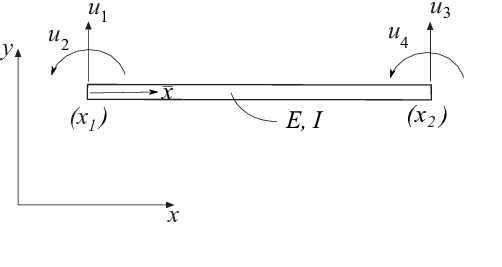
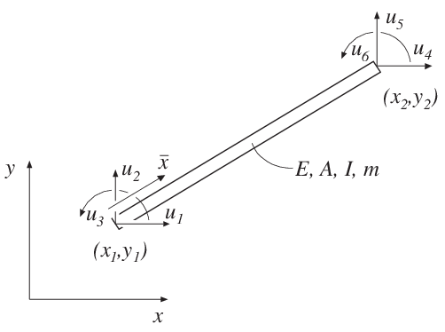

Beam element functions¶
Beam elements are available for one, two, and three dimensional linear static analysis. Two dimensional beam elements for nonlinear geometric and dynamic analysis are also available.
1D beam elements¶
beam1e¶
- Purpose:
Compute element stiffness matrix for a one dimensional beam element.
 - Syntax:
Ke = beam1e(ex, ep) [Ke, fe] = beam1e(ex, ep, eq)- Description:
beam1eprovides the global element stiffness matrixKefor a one dimensional beam element.The input variables
ex = [x1 x2]ep = [E I]supply the element nodal coordinates \(x_1\) and \(x_2\), the modulus of elasticity \(E\) and the moment of inertia \(I\).
The element load vector
fecan also be computed if a uniformly distributed load is applied to the element. The optional input variableeq = [q_ybar]then contains the distributed load per unit length, \(q_{\bar{y}}\).

- Theory:
The element stiffness matrix \(\bar{\mathbf{K}}^e\), stored in
Ke, is computed according to\[\begin{split}\bar{\mathbf{K}}^e = \frac{D_{EI}}{L^3} \begin{bmatrix} 12 & 6L & -12 & 6L \\ 6L & 4L^2 & -6L & 2L^2 \\ -12 & -6L & 12 & -6L \\ 6L & 2L^2 & -6L & 4L^2 \end{bmatrix}\end{split}\]where the bending stiffness \(D_{EI}\) and the length \(L\) are given by
\[D_{EI} = EI; \quad L = x_2 - x_1\]The element loads \(\bar{\mathbf{f}}_l^e\) stored in the variable
feare computed according to\[\begin{split}\bar{\mathbf{f}}_l^e = q_{\bar{y}} \begin{bmatrix} \dfrac{L}{2} \\ \dfrac{L^2}{12} \\ \dfrac{L}{2} \\ -\dfrac{L^2}{12} \end{bmatrix}\end{split}\]
{kind=link}
beam1s¶
- Purpose:
Compute section forces in a one dimensional beam element.

- Syntax:
es = beam1s(ex, ep, ed) es = beam1s(ex, ep, ed, eq) [es, edi, eci] = beam1s(ex, ep, ed, eq, n)- Description:
beam1scomputes the section forces and displacements in local directions along the beam elementbeam1e.The input variables
ex,epandeqare defined inbeam1e, and the element displacements, stored ined, are obtained by the functionextract. If distributed loads are applied to the element, the variableeqmust be included. The number of evaluation points for section forces and displacements are determined byn. Ifnis omitted, only the ends of the beam are evaluated.The output variables
\[\begin{split}\mathrm{es} = \begin{bmatrix} V(0) & M(0) \\ V(\bar{x}_{2}) & M(\bar{x}_{2}) \\ \vdots & \vdots \\ V(\bar{x}_{n-1}) & M(\bar{x}_{n-1})\\ V(L) & M(L) \end{bmatrix} \qquad \mathrm{edi} = \begin{bmatrix} v(0) \\ v(\bar{x}_{2}) \\ \vdots \\ v(\bar{x}_{n-1})\\ v(L) \end{bmatrix} \qquad \mathrm{eci} = \begin{bmatrix} 0 \\ \bar x_{2} \\ \vdots \\ \bar x_{n-1} \\ L \end{bmatrix}\end{split}\]contain the section forces, the displacements, and the evaluation points on the local \(\bar{x}\)-axis. \(L\) is the length of the beam element.
- Theory:
The nodal displacements in local coordinates are given by
\[\begin{split}\mathbf{\bar{a}}^e = \begin{bmatrix} \bar{u}_1 \\ \bar{u}_2 \\ \bar{u}_3 \\ \bar{u}_4 \end{bmatrix}\end{split}\]where the transpose of \(\mathbf{a}^e\) is stored in
ed.The displacement \(v(\bar{x})\), the bending moment \(M(\bar{x})\) and the shear force \(V(\bar{x})\) are computed from
\[v(\bar{x}) = \mathbf{N} \mathbf{\bar{a}}^e + v_p(\bar{x})\]\[M(\bar{x}) = D_{EI} \mathbf{B} \mathbf{\bar{a}}^e + M_p(\bar{x})\]\[V(\bar{x}) = -D_{EI} \frac{d\mathbf{B}}{dx} \mathbf{\bar{a}}^e + V_p(\bar{x})\]where
\[\mathbf{N} = \begin{bmatrix} 1 & \bar{x} & \bar{x}^2 & \bar{x}^3 \end{bmatrix} \mathbf{C}^{-1}\]\[\mathbf{B} = \begin{bmatrix} 0 & 0 & 2 & 6\bar{x} \end{bmatrix} \mathbf{C}^{-1}\]\[\frac{d\mathbf{B}}{dx} = \begin{bmatrix} 0 & 0 & 0 & 6 \end{bmatrix} \mathbf{C}^{-1}\]\[v_p(\bar{x}) = \frac{q_{\bar{y}}}{D_{EI}} \left( \frac{\bar{x}^4}{24} - \frac{L \bar{x}^3}{12} + \frac{L^2 \bar{x}^2}{24} \right)\]\[M_p(\bar{x}) = q_{\bar{y}} \left( \frac{\bar{x}^2}{2} - \frac{L \bar{x}}{2} + \frac{L^2}{12} \right)\]\[V_p(\bar{x}) = -q_{\bar{y}} \left( \bar{x} - \frac{L}{2} \right)\]in which \(D_{EI}\), \(L\), and \(q_{\bar{y}}\) are defined in
beam1eand\[\begin{split}\mathbf{C}^{-1} = \begin{bmatrix} 1 & 0 & 0 & 0 \\ 0 & 1 & 0 & 0 \\ -\frac{3}{L^2} & -\frac{2}{L} & \frac{3}{L^2} & -\frac{1}{L} \\ \frac{2}{L^3} & \frac{1}{L^2} & -\frac{2}{L^3} & \frac{1}{L^2} \end{bmatrix}\end{split}\]
beam1we¶
- Purpose:
Compute element stiffness matrix for a one dimensional beam element on elastic support.

- Syntax:
Ke = beam1we(ex, ep) [Ke, fe] = beam1we(ex, ep, eq)- Description:
beam1we provides the global element stiffness matrix Ke for a one dimensional beam element with elastic support.
The input variables
\[\mathrm{ex} = [x_1 \;\; x_2] \qquad \mathrm{ep} = [E\;\; I \;\; k_{\bar{y}}]\]supply the element nodal coordinates \(x_1\) and \(x_2\), the modulus of elasticity \(E\), the moment of inertia \(I\), and the spring stiffness in the transverse direction \(k_{\bar{y}}\).
The element load vector fe can also be computed if a uniformly distributed load is applied to the element. The optional input variable
\[\mathrm{eq} = \begin{bmatrix} q_{\bar{y}} \end{bmatrix}\]contains the distributed load per unit length, \(q_{\bar{y}}\).
- Theory:
The element stiffness matrix \(\bar{\mathbf{K}}^e\), stored in Ke, is computed according to
\[\bar{\mathbf{K}}^e = \bar{\mathbf{K}}^e_0 + \bar{\mathbf{K}}^e_s\]where
\[\begin{split}\bar{\mathbf{K}}^e_0 = \frac{D_{EI}}{L^3} \begin{bmatrix} 12 & 6L & -12 & 6L \\ 6L & 4L^2 & -6L & 2L^2 \\ -12 & -6L & 12 & -6L \\ 6L & 2L^2 & -6L & 4L^2 \end{bmatrix}\end{split}\]and
\[\begin{split}\bar{\mathbf{K}}^e_s = \frac{k_{\bar{y}} L}{420} \begin{bmatrix} 156 & 22L & 54 & -13L \\ 22L & 4L^2 & 13L & -3L^2 \\ 54 & 13L & 156 & -22L \\ -13L & -3L^2 & -22L & 4L^2 \end{bmatrix}\end{split}\]where the bending stiffness \(D_{EI}\) and the length \(L\) are given by
\[D_{EI} = EI \qquad L = x_2 - x_1\]The element loads \(\bar{\mathbf{f}}_l^e\) stored in the variable fe are computed according to
\[\begin{split}\bar{\mathbf{f}}_l^e = q_{\bar{y}} \begin{bmatrix} \dfrac{L}{2} \\ \dfrac{L^2}{12} \\ \dfrac{L}{2} \\ -\dfrac{L^2}{12} \end{bmatrix}\end{split}\]
beam1ws¶
- Purpose:
Compute section forces in a one dimensional beam element with elastic support.
- Syntax:
es = beam1ws(ex, ep, ed) es = beam1ws(ex, ep, ed, eq) [es, edi, eci] = beam1ws(ex, ep, ed, eq, n)- Description:
beam1wscomputes the section forces and displacements in local directions along the beam elementbeam1we.The input variables
ex,epandeqare defined inbeam1we, and the element displacements, stored ined, are obtained by the functionextract. If distributed loads are applied to the element, the variableeqmust be included. The number of evaluation points for section forces and displacements are determined byn. Ifnis omitted, only the ends of the beam are evaluated.The output variables
\[ \begin{align}\begin{aligned}\begin{split}\mathrm{es} = \left[ \begin{array}{cc} V(0) & M(0) \\ V(\bar{x}_{2}) & M(\bar{x}_{2}) \\ \vdots & \vdots \\ V(\bar{x}_{n-1}) & M(\bar{x}_{n-1})\\ V(L) & M(L) \end{array} \right]\end{split}\\\begin{split}\quad \mathrm{edi} = \left[ \begin{array}{c} v(0) \\ v(\bar{x}_{2}) \\ \vdots \\ v(\bar{x}_{n-1})\\ v(L) \end{array} \right]\end{split}\\\begin{split}\quad \mathrm{eci} = \left[ \begin{array}{c} 0 \\ \bar x_{2} \\ \vdots \\ \bar x_{n-1} \\ L \end{array} \right]\end{split}\end{aligned}\end{align} \]contain the section forces, the displacements, and the evaluation points on the local \(\bar{x}\)-axis. \(L\) is the length of the beam element.
- Theory:
The nodal displacements in local coordinates are given by
\[\begin{split}\mathbf{\bar{a}}^e = \begin{bmatrix} \bar{u}_1 \\ \bar{u}_2 \\ \bar{u}_3 \\ \bar{u}_4 \end{bmatrix}\end{split}\]where the transpose of \(\mathbf{a}^e\) is stored in
ed.The displacement \(v(\bar{x})\), the bending moment \(M(\bar{x})\) and the shear force \(V(\bar{x})\) are computed from
\[v(\bar{x}) = \mathbf{N} \mathbf{\bar{a}}^e + v_p(\bar{x})\]\[M(\bar{x}) = D_{EI} \mathbf{B} \mathbf{\bar{a}}^e + M_p(\bar{x})\]\[V(\bar{x}) = -D_{EI} \frac{d\mathbf{B}}{dx} \mathbf{\bar{a}}^e + V_p(\bar{x})\]where
\[\mathbf{N} = \begin{bmatrix} 1 & \bar{x} & \bar{x}^2 & \bar{x}^3 \end{bmatrix} \mathbf{C}^{-1}\]\[\mathbf{B} = \begin{bmatrix} 0 & 0 & 2 & 6\bar{x} \end{bmatrix} \mathbf{C}^{-1}\]\[\frac{d\mathbf{B}}{dx} = \begin{bmatrix} 0 & 0 & 0 & 6 \end{bmatrix} \mathbf{C}^{-1}\]\[\begin{split}v_p(\bar{x}) = -\frac{k_{\bar{y}}}{D_{EI}} \begin{bmatrix} \frac{\bar{x}^4 - 2L\bar{x}^3 + L^2\bar{x}^2}{24} \\ \frac{\bar{x}^5 - 3L^2\bar{x}^3 + 2L^3\bar{x}^2}{120} \\ \frac{\bar{x}^6 - 4L^3\bar{x}^3 + 3L^4\bar{x}^2}{360} \\ \frac{\bar{x}^7 - 5L^4\bar{x}^3 + 4L^5\bar{x}^2}{840} \end{bmatrix}^T \mathbf{C}^{-1} \mathbf{\bar{a}}^e + \frac{q_{\bar{y}}}{D_{EI}}\left(\frac{\bar{x}^4}{24} - \frac{L\bar{x}^3}{12} + \frac{L^2\bar{x}^2}{24}\right)\end{split}\]\[\begin{split}M_p(\bar{x}) = -k_{\bar{y}} \begin{bmatrix} \frac{6\bar{x}^2 - 6L\bar{x} + L^2}{12} \\ \frac{10\bar{x}^3 - 9L^2\bar{x} + 2L^3}{60} \\ \frac{5\bar{x}^4 - 4L^3\bar{x} + L^4}{60} \\ \frac{21\bar{x}^5 - 15L^4\bar{x} + 4L^5}{420} \end{bmatrix}^T \mathbf{C}^{-1} \mathbf{\bar{a}}^e + q_{\bar{y}}\left(\frac{\bar{x}^2}{2} - \frac{L\bar{x}}{2} + \frac{L^2}{12}\right)\end{split}\]\[\begin{split}V_p(\bar{x}) = k_{\bar{y}} \begin{bmatrix} \frac{2\bar{x} - L}{2} \\ \frac{10\bar{x}^2 - 3L^2}{20} \\ \frac{5\bar{x}^3 - L^3}{15} \\ \frac{7\bar{x}^4 - L^4}{28} \end{bmatrix}^T \mathbf{C}^{-1} \mathbf{\bar{a}}^e - q_{\bar{y}}\left(\bar{x} - \frac{L}{2}\right)\end{split}\]in which \(D_{EI}\), \(k_{\bar{y}}\), \(L\), and \(q_{\bar{y}}\) are defined in
beam1weand\[\begin{split}\mathbf{C}^{-1} = \begin{bmatrix} 1 & 0 & 0 & 0 \\ 0 & 1 & 0 & 0 \\ -\frac{3}{L^2} & -\frac{2}{L} & \frac{3}{L^2} & -\frac{1}{L} \\ \frac{2}{L^3} & \frac{1}{L^2} & -\frac{2}{L^3} & \frac{1}{L^2} \end{bmatrix}\end{split}\]
2D beam elements¶
beam2e¶
- Purpose:
Compute element stiffness matrix for a two-dimensional beam element.

- Syntax:
Ke = beam2e(ex, ey, ep)
[Ke, fe] = beam2e(ex, ey, ep, eq)
- Description:
beam2e provides the global element stiffness matrix Ke for a two-dimensional beam element.
The input variables:
\[\begin{split}\begin{aligned} &\text{ex} = [x_1, x_2] \\ &\text{ey} = [y_1, y_2] \\ &\text{ep} = [E, A, I] \end{aligned}\end{split}\]supply the element nodal coordinates \(x_1\), \(y_1\), \(x_2\), and \(y_2\), the modulus of elasticity \(E\), the cross-section area \(A\), and the moment of inertia \(I\).
The element load vector fe can also be computed if a uniformly distributed transverse load is applied to the element. The optional input variable:
\[\text{eq} = [q_{\bar{x}}, q_{\bar{y}}]\]contains the distributed loads per unit length, \(q_{\bar{x}}\) and \(q_{\bar{y}}\).

- Theory:
The element stiffness matrix \(\mathbf{K}^e\), stored in Ke, is computed according to:
\[\mathbf{K}^e = \mathbf{G}^T \bar{\mathbf{K}}^e \mathbf{G}\]where:
\[\begin{split}\bar{\mathbf{K}}^e = \begin{bmatrix} \frac{D_{EA}}{L} & 0 & 0 & -\frac{D_{EA}}{L} & 0 & 0 \\ 0 & \frac{12D_{EI}}{L^3} & \frac{6D_{EI}}{L^2} & 0 & -\frac{12D_{EI}}{L^3} & \frac{6D_{EI}}{L^2} \\ 0 & \frac{6D_{EI}}{L^2} & \frac{4D_{EI}}{L} & 0 & -\frac{6D_{EI}}{L^2} & \frac{2D_{EI}}{L} \\ -\frac{D_{EA}}{L} & 0 & 0 & \frac{D_{EA}}{L} & 0 & 0 \\ 0 & -\frac{12D_{EI}}{L^3} & -\frac{6D_{EI}}{L^2} & 0 & \frac{12D_{EI}}{L^3} & -\frac{6D_{EI}}{L^2} \\ 0 & \frac{6D_{EI}}{L^2} & \frac{2D_{EI}}{L} & 0 & -\frac{6D_{EI}}{L^2} & \frac{4D_{EI}}{L} \end{bmatrix}\end{split}\]\[\begin{split}\mathbf{G} = \begin{bmatrix} n_{x\bar{x}} & n_{y\bar{x}} & 0 & 0 & 0 & 0 \\ n_{x\bar{y}} & n_{y\bar{y}} & 0 & 0 & 0 & 0 \\ 0 & 0 & 1 & 0 & 0 & 0 \\ 0 & 0 & 0 & n_{x\bar{x}} & n_{y\bar{x}} & 0 \\ 0 & 0 & 0 & n_{x\bar{y}} & n_{y\bar{y}} & 0 \\ 0 & 0 & 0 & 0 & 0 & 1 \end{bmatrix}\end{split}\]where the axial stiffness \(D_{EA}\), the bending stiffness \(D_{EI}\), and the length \(L\) are given by:
\[D_{EA} = EA, \quad D_{EI} = EI, \quad L = \sqrt{(x_2 - x_1)^2 + (y_2 - y_1)^2}\]The transformation matrix \(\mathbf{G}\) contains the direction cosines:
\[n_{x\bar{x}} = n_{y\bar{y}} = \frac{x_2 - x_1}{L}, \quad n_{y\bar{x}} = -n_{x\bar{y}} = \frac{y_2 - y_1}{L}\]The element loads \(\mathbf{f}^e_l\), stored in the variable fe, are computed according to:
\[\mathbf{f}^e_l = \mathbf{G}^T \bar{\mathbf{f}}^e_l\]where:
\[\begin{split}\bar{\mathbf{f}}^e_l = \begin{bmatrix} \frac{q_{\bar{x}}L}{2} \\ \frac{q_{\bar{y}}L}{2} \\ \frac{q_{\bar{y}}L^2}{12} \\ \frac{q_{\bar{x}}L}{2} \\ \frac{q_{\bar{y}}L}{2} \\ -\frac{q_{\bar{y}}L^2}{12} \end{bmatrix}\end{split}\]
beam2s¶
- Purpose:
Compute section forces in a two-dimensional beam element.

- Syntax:
[es] = beam2s(ex, ey, ep, ed) [es] = beam2s(ex, ey, ep, ed, eq) [es, edi] = beam2s(ex, ey, ep, ed, eq, n) [es, edi, eci] = beam2s(ex, ey, ep, ed, eq, n)- Description:
beam2s computes the section forces and displacements in local directions along the beam element beam2e.
The input variables ex, ey, ep, and eq are defined in beam2e.
The element displacements, stored in ed, are obtained by the function extract. If a distributed load is applied to the element, the variable eq must be included. The number of evaluation points for section forces and displacements is determined by n. If n is omitted, only the ends of the beam are evaluated.
The output variables:
\[ \begin{align}\begin{aligned}\begin{split}es = \begin{bmatrix} N(0) & V(0) & M(0) \\ N(\bar{x}_2) & V(\bar{x}_2) & M(\bar{x}_2) \\ \vdots & \vdots & \vdots \\ N(\bar{x}_{n-1}) & V(\bar{x}_{n-1}) & M(\bar{x}_{n-1}) \\ N(L) & V(L) & M(L) \end{bmatrix}\end{split}\\\begin{split}edi = \begin{bmatrix} u(0) & v(0) \\ u(\bar{x}_2) & v(\bar{x}_2) \\ \vdots & \vdots \\ u(\bar{x}_{n-1}) & v(\bar{x}_{n-1}) \\ u(L) & v(L) \end{bmatrix}\end{split}\\\begin{split}eci = \begin{bmatrix} 0 \\ \bar{x}_2 \\ \vdots \\ \bar{x}_{n-1} \\ L \end{bmatrix}\end{split}\end{aligned}\end{align} \]contain the section forces, the displacements, and the evaluation points on the local \(\bar{x}\)-axis. \(L\) is the length of the beam element.
- Theory:
The nodal displacements in local coordinates are given by:
\[\begin{split}\mathbf{\bar{a}}^e = \begin{bmatrix} \bar{u}_1 \\ \bar{u}_2 \\ \bar{u}_3 \\ \bar{u}_4 \\ \bar{u}_5 \\ \bar{u}_6 \end{bmatrix} = \mathbf{G} \mathbf{a}^e\end{split}\]where \(\mathbf{G}\) is described in beam2e and the transpose of \(\mathbf{a}^e\) is stored in ed.
The displacements associated with bar action and beam action are determined as:
\[\begin{split}\mathbf{\bar{a}}^e_{\text{bar}} = \begin{bmatrix} \bar{u}_1 \\ \bar{u}_4 \end{bmatrix}, \quad \mathbf{\bar{a}}^e_{\text{beam}} = \begin{bmatrix} \bar{u}_2 \\ \bar{u}_3 \\ \bar{u}_5 \\ \bar{u}_6 \end{bmatrix}\end{split}\]The displacement \(u(\bar{x})\) and the normal force \(N(\bar{x})\) are computed from:
\[u(\bar{x}) = \mathbf{N}_{\text{bar}} \mathbf{\bar{a}}^e_{\text{bar}} + u_p(\bar{x})\]\[N(\bar{x}) = D_{EA} \mathbf{B}_{\text{bar}} \mathbf{\bar{a}}^e + N_p(\bar{x})\]where:
\[\mathbf{N}_{\text{bar}} = \begin{bmatrix} 1 & \bar{x} \end{bmatrix} \mathbf{C}^{-1}_{\text{bar}} = \begin{bmatrix} 1 - \frac{\bar{x}}{L} & \frac{\bar{x}}{L} \end{bmatrix}\]\[\mathbf{B}_{\text{bar}} = \begin{bmatrix} 0 & 1 \end{bmatrix} \mathbf{C}^{-1}_{\text{bar}} = \begin{bmatrix} -\frac{1}{L} & \frac{1}{L} \end{bmatrix}\]\[u_p(\bar{x}) = -\frac{q_{\bar{x}}}{D_{EA}} \left(\frac{\bar{x}^2}{2} - \frac{L \bar{x}}{2}\right)\]\[N_p(\bar{x}) = -q_{\bar{x}} \left(\bar{x} - \frac{L}{2}\right)\]where \(D_{EA}\), \(L\), and \(q_{\bar{x}}\) are defined in beam2e, and:
\[\begin{split}\mathbf{C}^{-1}_{\text{bar}} = \begin{bmatrix} 1 & 0 \\ -\frac{1}{L} & \frac{1}{L} \end{bmatrix}\end{split}\]The displacement \(v(\bar{x})\), the bending moment \(M(\bar{x})\), and the shear force \(V(\bar{x})\) are computed from:
\[v(\bar{x}) = \mathbf{N}_{\text{beam}} \mathbf{\bar{a}}^e_{\text{beam}} + v_p(\bar{x})\]\[M(\bar{x}) = D_{EI} \mathbf{B}_{\text{beam}} \mathbf{\bar{a}}^e_{\text{beam}} + M_p(\bar{x})\]\[V(\bar{x}) = -D_{EI} \frac{d\mathbf{B}_{\text{beam}}}{d\bar{x}} \mathbf{\bar{a}}^e_{\text{beam}} + V_p(\bar{x})\]where:
\[\mathbf{N}_{\text{beam}} = \begin{bmatrix} 1 & \bar{x} & \bar{x}^2 & \bar{x}^3 \end{bmatrix} \mathbf{C}^{-1}_{\text{beam}}\]\[\mathbf{B}_{\text{beam}} = \begin{bmatrix} 0 & 0 & 2 & 6\bar{x} \end{bmatrix} \mathbf{C}^{-1}_{\text{beam}}\]\[\frac{d\mathbf{B}_{\text{beam}}}{d\bar{x}} = \begin{bmatrix} 0 & 0 & 0 & 6 \end{bmatrix} \mathbf{C}^{-1}_{\text{beam}}\]\[v_p(\bar{x}) = \frac{q_{\bar{y}}}{D_{EI}} \left(\frac{\bar{x}^4}{24} - \frac{L \bar{x}^3}{12} + \frac{L^2 \bar{x}^2}{24}\right)\]\[M_p(\bar{x}) = q_{\bar{y}} \left(\frac{\bar{x}^2}{2} - \frac{L \bar{x}}{2} + \frac{L^2}{12}\right)\]\[V_p(\bar{x}) = -q_{\bar{y}} \left(\bar{x} - \frac{L}{2}\right)\]where \(D_{EI}\), \(L\), and \(q_{\bar{y}}\) are defined in beam2e, and:
\[\begin{split}\mathbf{C}^{-1}_{\text{beam}} = \begin{bmatrix} 1 & 0 & 0 & 0 \\ 0 & 1 & 0 & 0 \\ -\frac{3}{L^2} & -\frac{2}{L} & \frac{3}{L^2} & -\frac{1}{L} \\ \frac{2}{L^3} & \frac{1}{L^2} & -\frac{2}{L^3} & \frac{1}{L^2} \end{bmatrix}\end{split}\]
beam2te¶
- Purpose:
Compute element stiffness matrix for a two dimensional Timoshenko beam element.

Two dimensional beam element¶
- Syntax:
Ke = beam2te(ex, ey, ep) [Ke, fe] = beam2te(ex, ey, ep, eq)- Description:
beam2teprovides the global element stiffness matrixKefor a two dimensional Timoshenko beam element.The input variables
\[\begin{split}\begin{aligned} \mathbf{ex} &= [x_1 \;\; x_2] \\ \mathbf{ey} &= [y_1 \;\; y_2] \\ \mathbf{ep} &= [E \;\; G \;\; A \;\; I \;\; k_s] \end{aligned}\end{split}\]supply the element nodal coordinates \(x_1\), \(y_1\), \(x_2\), and \(y_2\), the modulus of elasticity \(E\), the shear modulus \(G\), the cross section area \(A\), the moment of inertia \(I\) and the shear correction factor \(k_s\).
The element load vector
fecan also be computed if uniformly distributed loads are applied to the element. The optional input variable\[\mathrm{eq} = [q_{\bar{x}} \;\; q_{\bar{y}}]\]contains the distributed loads per unit length, \(q_{\bar{x}}\) and \(q_{\bar{y}}\).
Uniformly distributed load¶
- Theory:
The element stiffness matrix \(\mathbf{K}^e\), stored in
Ke, is computed according to\[\mathbf{K}^e = \mathbf{G}^T \bar{\mathbf{K}}^e \mathbf{G}\]where \(\mathbf{G}\) is described in
beam2e, and \(\bar{\mathbf{K}}^e\) is given by\[\begin{split}\bar{\mathbf{K}}^e = \begin{bmatrix} \frac{D_{EA}}{L} & 0 & 0 & -\frac{D_{EA}}{L} & 0 & 0 \\ 0 & \frac{12D_{EI}}{L^3(1+\mu)} & \frac{6D_{EI}}{L^2(1+\mu)} & 0 & -\frac{12D_{EI}}{L^3(1+\mu)} & \frac{6D_{EI}}{L^2(1+\mu)} \\ 0 & \frac{6D_{EI}}{L^2(1+\mu)} & \frac{4D_{EI}(1+\frac{\mu}{4})}{L(1+\mu)} & 0 & -\frac{6D_{EI}}{L^2(1+\mu)} & \frac{2D_{EI}(1-\frac{\mu}{2})}{L(1+\mu)} \\ -\frac{D_{EA}}{L} & 0 & 0 & \frac{D_{EA}}{L} & 0 & 0 \\ 0 & -\frac{12D_{EI}}{L^3(1+\mu)} & -\frac{6D_{EI}}{L^2(1+\mu)} & 0 & \frac{12D_{EI}}{L^3(1+\mu)} & -\frac{6D_{EI}}{L^2(1+\mu)} \\ 0 & \frac{6D_{EI}}{L^2(1+\mu)} & \frac{2D_{EI}(1-\frac{\mu}{2})}{L(1+\mu)} & 0 & -\frac{6D_{EI}}{L^2(1+\mu)} & \frac{4D_{EI}(1+\frac{\mu}{4})}{L(1+\mu)} \end{bmatrix}\end{split}\]where the axial stiffness \(D_{EA}\), the bending stiffness \(D_{EI}\), and the length \(L\) are given by
\[D_{EA} = EA \qquad D_{EI} = EI \qquad L = \sqrt{(x_2-x_1)^2 + (y_2-y_1)^2}\]and where
\[\mu = \frac{12 D_{EI}}{L^2 G A k_s}\]The element loads \(\mathbf{f}^e_l\) stored in the variable
feare computed according to\[\mathbf{f}^e_l = \mathbf{G}^T \bar{\mathbf{f}}^e_l\]where
\[\begin{split}\bar{\mathbf{f}}^e_l = \begin{bmatrix} \frac{q_{\bar{x}} L}{2} \\ \frac{q_{\bar{y}} L}{2} \\ \frac{q_{\bar{y}} L^2}{12} \\ \frac{q_{\bar{x}} L}{2} \\ \frac{q_{\bar{y}} L}{2} \\ -\frac{q_{\bar{y}} L^2}{12} \end{bmatrix}\end{split}\]
beam2ts¶
- Purpose:
Compute section forces in a two dimensional Timoshenko beam element.
- Syntax:
es = beam2ts(ex, ey, ep, ed) es = beam2ts(ex, ey, ep, ed, eq) [es, edi, eci] = beam2ts(ex, ey, ep, ed, eq, n)- Description:
beam2tscomputes the section forces and displacements in local directions along the beam elementbeam2te.The input variables
ex,ey,epandeqare defined inbeam2te. The element displacements, stored ined, are obtained by the functionextract. If distributed loads are applied to the element, the variableeqmust be included. The number of evaluation points for section forces and displacements are determined byn. Ifnis omitted, only the ends of the beam are evaluated.The output variables
\[\begin{split}\begin{aligned} \mathrm{es} &= \left[\; \mathbf{N} \; \mathbf{V} \; \mathbf{M}\; \right] \\ \mathrm{edi} &= \left[\; \mathbf{u} \; \mathbf{v} \; \boldsymbol{\theta} \; \right] \\ \mathrm{eci} &= \left[ \mathbf{\bar{x}} \right] \end{aligned}\end{split}\]consist of column matrices that contain the section forces, the displacements and rotation of the cross section (note that the rotation \(\theta\) is not equal to \(\frac{d\bar v}{d\bar x}\)), and the evaluation points on the local \(\bar{x}\)-axis. The explicit matrix expressions are
\[\begin{split}\mathrm{es} = \begin{bmatrix} N_{1} & V_{1} & M_{1} \\ N_{2} & V_{2} & M_{2} \\ \vdots &\vdots &\vdots \\ N_{n} & V_{n} & M_{n} \end{bmatrix} \qquad \mathrm{edi} = \begin{bmatrix} u_{1} & v_{1} & \theta_1 \\ u_{2} & v_{2} & \theta_2 \\ \vdots & \vdots & \vdots \\ u_{n} & v_{n} & \theta_n \end{bmatrix} \qquad \mathrm{eci} = \begin{bmatrix} 0 \\ \bar x_{2} \\ \vdots \\ \bar x_{n-1} \\ L \end{bmatrix}\end{split}\]where \(L\) is the length of the beam element.
- Theory:
The nodal displacements in local coordinates are given by
\[\begin{split}\mathbf{\bar{a}}^e = \begin{bmatrix} \bar{u}_1 \\ \bar{u}_2 \\ \bar{u}_3 \\ \bar{u}_4 \\ \bar{u}_5 \\ \bar{u}_6 \end{bmatrix} = \mathbf{G} \mathbf{a}^e\end{split}\]where \(\mathbf{G}\) is described in
beam2eand the transpose of \(\mathbf{a}^e\) is stored ined. The displacements associated with bar action and beam action are determined as\[\begin{split}\mathbf{\bar{a}}^e_{\mathrm{bar}} = \begin{bmatrix} \bar{u}_1 \\ \bar{u}_4 \end{bmatrix} \qquad \mathbf{\bar{a}}^e_{\mathrm{beam}} = \begin{bmatrix} \bar{u}_2 \\ \bar{u}_3 \\ \bar{u}_5 \\ \bar{u}_6 \end{bmatrix}\end{split}\]The displacement \(u(\bar{x})\) and the normal force \(N(\bar{x})\) are computed from
\[u(\bar{x}) = \mathbf{N}_{\mathrm{bar}} \mathbf{\bar{a}}^e_{\mathrm{bar}} + u_p(\bar{x})\]\[N(\bar{x}) = D_{EA} \mathbf{B}_{\mathrm{bar}} \mathbf{\bar{a}}^e + N_p(\bar{x})\]where
\[\mathbf{N}_{\mathrm{bar}} = \begin{bmatrix} 1 & \bar{x} \end{bmatrix} \mathbf{C}^{-1}_{\mathrm{bar}} = \begin{bmatrix} 1-\frac{\bar{x}}{L} & \frac{\bar{x}}{L} \end{bmatrix}\]\[\mathbf{B}_{\mathrm{bar}} = \begin{bmatrix} 0 & 1 \end{bmatrix} \mathbf{C}^{-1}_{\mathrm{bar}} = \begin{bmatrix} -\frac{1}{L} & \frac{1}{L} \end{bmatrix}\]\[u_p(\bar{x}) = -\frac{q_{\bar{x}}}{D_{EA}}\left(\frac{\bar{x}^2}{2}-\frac{L\bar{x}}{2}\right)\]\[N_p(\bar{x}) = -q_{\bar{x}}\left(\bar{x}-\frac{L}{2}\right)\]in which \(D_{EA}\), \(L\), and \(q_{\bar{x}}\) are defined in
beam2teand\[\begin{split}\mathbf{C}^{-1}_{\mathrm{bar}} = \begin{bmatrix} 1 & 0 \\ -\frac{1}{L} & \frac{1}{L} \end{bmatrix}\end{split}\]The displacement \(v(\bar{x})\), the rotation \(\theta(\bar{x})\), the bending moment \(M(\bar{x})\) and the shear force \(V(\bar{x})\) are computed from
\[v(\bar{x}) = \mathbf{N}_{\mathrm{beam},v} \mathbf{\bar{a}}^e_{\mathrm{beam}} + v_p(\bar{x})\]\[\theta(\bar{x}) = \mathbf{N}_{\mathrm{beam},\theta} \mathbf{\bar{a}}^e_{\mathrm{beam}} + \theta_p(\bar{x})\]\[M(\bar{x}) = D_{EI} \frac{d\theta}{dx} = D_{EI} \frac{d\mathbf{N}_{\mathrm{beam},\theta}}{d\bar{x}} \mathbf{\bar{a}}^e_{\mathrm{beam}} + M_p(\bar{x})\]\[V(\bar{x}) = D_{GA} k_s \left(\frac{d v}{dx} - \theta \right) = D_{GA} k_s \left(\frac{d\mathbf{N}_{\mathrm{beam},v}}{d\bar{x}} - \mathbf{N}_{\mathrm{beam},\theta} \right) \mathbf{\bar{a}}^e_{\mathrm{beam}} + V_p(\bar{x})\]where
\[\mathbf{N}_{\mathrm{beam},v} = \begin{bmatrix} 1 & \bar{x} & \bar{x}^2 & \bar{x}^3 \end{bmatrix} \mathbf{C}^{-1}_{\mathrm{beam}}\]\[\frac{d\mathbf{N}_{\mathrm{beam},v}}{d\bar{x}} = \begin{bmatrix} 0 & 1 & 2\bar{x} & 3\bar{x}^2 \end{bmatrix} \mathbf{C}^{-1}_{\mathrm{beam}}\]\[\mathbf{N}_{\mathrm{beam},\theta} = \begin{bmatrix} 0 & 1 & 2\bar{x} & 3\bar{x}^2 + 6\alpha \end{bmatrix} \mathbf{C}^{-1}_{\mathrm{beam}}\]\[\frac{d\mathbf{N}_{\mathrm{beam},\theta}}{d\bar{x}} = \begin{bmatrix} 0 & 0 & 2 & 6\bar{x} \end{bmatrix} \mathbf{C}^{-1}_{\mathrm{beam}}\]\[v_p(\bar{x}) = \frac{q_{\bar{y}}}{D_{EI}}\left(\frac{\bar{x}^4}{24} - \frac{L\bar{x}^3}{12} + \frac{L^2\bar{x}^2}{2}\right) + \frac{q_{\bar{y}}}{D_{GA}k_s}\left(-\frac{\bar{x}^2}{2} + \frac{L\bar{x}}{2}\right)\]\[\theta_p(\bar{x}) = \frac{q_{\bar{y}}}{D_{EI}}\left(\frac{\bar{x}^3}{6} - \frac{L\bar{x}^2}{4} + \frac{L^2\bar{x}}{12}\right)\]\[M_p(\bar{x}) = q_{\bar{y}}\left(\frac{\bar{x}^2}{2} - \frac{L\bar{x}}{2} + \frac{L^2}{12}\right)\]\[V_p(\bar{x}) = -q_{\bar{y}}\left(\bar{x} - \frac{L}{2}\right)\]in which \(D_{EI}\), \(D_{GA}\), \(k_s\), \(L\), and \(q_{\bar{y}}\) are defined in
beam2teand\[\begin{split}\mathbf{C}^{-1}_{\mathrm{beam}} = \frac{1}{L^2 + 12\alpha} \begin{bmatrix} L^2 + 12\alpha & 0 & 0 & 0 \\ -\frac{12\alpha}{L} & L^2 + 6\alpha & \frac{12\alpha}{L} & -6\alpha \\ -3 & -2L - \frac{6\alpha}{L} & 3 & -L + \frac{6\alpha}{L} \\ \frac{2}{L} & 1 & -\frac{2}{L} & 1 \end{bmatrix}\end{split}\]with
\[\alpha = \frac{D_{EI}}{D_{GA} k_s}\]
beam2we¶
- Purpose:
Compute element stiffness matrix for a two dimensional beam element on elastic support.

- Syntax:
Ke = beam2we(ex, ey, ep) [Ke, fe] = beam2we(ex, ey, ep, eq)- Description:
beam2weprovides the global element stiffness matrixKefor a two dimensional beam element with elastic support.The input variables
\[\begin{split}\begin{array}{l} \text{ex} = [x_1\;\; x_2] \\ \text{ey} = [y_1\;\; y_2] \\ \text{ep} = [E\;\; A\;\; I\;\; k_{\bar{x}}\;\; k_{\bar{y}}] \end{array}\end{split}\]supply the element nodal coordinates \(x_1\), \(x_2\), \(y_1\), and \(y_2\), the modulus of elasticity \(E\), the cross section area \(A\), the moment of inertia \(I\), the spring stiffness in the axial direction \(k_{\bar{x}}\), and the spring stiffness in the transverse direction \(k_{\bar{y}}\).
The element load vector
fecan also be computed if uniformly distributed loads are applied to the element. The optional input variable\[\text{eq} = [q_{\bar{x}}\;\; q_{\bar{y}}]\]contains the distributed load per unit length, \(q_{\bar{x}}\) and \(q_{\bar{y}}\).
- Theory:
The element stiffness matrix \(\mathbf{K}^e\), stored in
Ke, is computed according to\[\mathbf{K}^e = \mathbf{G}^T \bar{\mathbf{K}}^e \mathbf{G}\]where
\[\bar{\mathbf{K}}^e = \bar{\mathbf{K}}^e_0 + \bar{\mathbf{K}}^e_s\]\[\begin{split}\bar{\mathbf{K}}^e_0 = \begin{bmatrix} \frac{D_{EA}}{L} & 0 & 0 & -\frac{D_{EA}}{L} & 0 & 0 \\ 0 & \frac{12 D_{EI}}{L^3} & \frac{6 D_{EI}}{L^2} & 0 & -\frac{12 D_{EI}}{L^3} & \frac{6 D_{EI}}{L^2} \\ 0 & \frac{6 D_{EI}}{L^2} & \frac{4 D_{EI}}{L} & 0 & -\frac{6 D_{EI}}{L^2} & \frac{2 D_{EI}}{L} \\ -\frac{D_{EA}}{L} & 0 & 0 & \frac{D_{EA}}{L} & 0 & 0 \\ 0 & -\frac{12 D_{EI}}{L^3} & -\frac{6 D_{EI}}{L^2} & 0 & \frac{12 D_{EI}}{L^3} & -\frac{6 D_{EI}}{L^2} \\ 0 & \frac{6 D_{EI}}{L^2} & \frac{2 D_{EI}}{L} & 0 & -\frac{6 D_{EI}}{L^2} & \frac{4 D_{EI}}{L} \end{bmatrix}\end{split}\]\[\begin{split}\bar{\mathbf{K}}^e_s = \frac{L}{420} \begin{bmatrix} 140k_{\bar{x}} & 0 & 0 & 70k_{\bar{x}} & 0 & 0 \\ 0 & 156k_{\bar{y}} & 22k_{\bar{y}}L & 0 & 54k_{\bar{y}} & -13k_{\bar{y}}L \\ 0 & 22k_{\bar{y}}L & 4k_{\bar{y}}L^2 & 0 & 13k_{\bar{y}}L & -3k_{\bar{y}}L^2 \\ 70k_{\bar{x}} & 0 & 0 & 140k_{\bar{x}} & 0 & 0 \\ 0 & 54k_{\bar{y}} & 13k_{\bar{y}}L & 0 & 156k_{\bar{y}} & -22k_{\bar{y}}L \\ 0 & -13k_{\bar{y}}L & -3k_{\bar{y}}L^2 & 0 & -22k_{\bar{y}}L & 4k_{\bar{y}}L^2 \end{bmatrix}\end{split}\]\[\begin{split}\mathbf{G} = \begin{bmatrix} n_{x\bar{x}} & n_{y\bar{x}} & 0 & 0 & 0 & 0 \\ n_{x\bar{y}} & n_{y\bar{y}} & 0 & 0 & 0 & 0 \\ 0 & 0 & 1 & 0 & 0 & 0 \\ 0 & 0 & 0 & n_{x\bar{x}} & n_{y\bar{x}} & 0 \\ 0 & 0 & 0 & n_{x\bar{y}} & n_{y\bar{y}} & 0 \\ 0 & 0 & 0 & 0 & 0 & 1 \end{bmatrix}\end{split}\]where the axial stiffness \(D_{EA}\), the bending stiffness \(D_{EI}\) and the length \(L\) are given by
\[D_{EA} = EA;\quad D_{EI} = EI;\quad L = \sqrt{(x_2 - x_1)^2 + (y_2 - y_1)^2}\]The transformation matrix \(\mathbf{G}\) contains the direction cosines
\[n_{x\bar{x}} = n_{y\bar{y}} = \frac{x_2 - x_1}{L} \qquad n_{y\bar{x}} = -n_{x\bar{y}} = \frac{y_2 - y_1}{L}\]The element loads \(\mathbf{f}^e_l\) stored in the variable
feare computed according to\[\mathbf{f}^e_l = \mathbf{G}^T \bar{\mathbf{f}}^e_l\]where
\[\begin{split}\bar{\mathbf{f}}^e_l = \begin{bmatrix} \dfrac{q_{\bar{x}}L}{2} \\ \dfrac{q_{\bar{y}}L}{2} \\ \dfrac{q_{\bar{y}}L^2}{12} \\ \dfrac{q_{\bar{x}}L}{2} \\ \dfrac{q_{\bar{y}}L}{2} \\ -\dfrac{q_{\bar{y}}L^2}{12} \end{bmatrix}\end{split}\]
beam2ws¶
- Purpose:
Compute section forces in a two dimensional beam element with elastic support.
- Syntax:
es = beam2ws(ex, ey, ep, ed) es = beam2ws(ex, ey, ep, ed, eq) es, edi, eci = beam2ws(ex, ey, ep, ed, eq, n)- Description:
beam2wscomputes the section forces and displacements in local directions along the beam elementbeam2we.The input variables
ex,ey,epandeqare defined inbeam2we, and the element displacements, stored ined, are obtained by the functionextract. If distributed loads are applied to the element, the variableeqmust be included. The number of evaluation points for section forces and displacements are determined byn. Ifnis omitted, only the ends of the beam are evaluated.The output variables
\[ \begin{align}\begin{aligned}\begin{split}\mathrm{es} = \begin{bmatrix} N(0) & V(0) & M(0) \\ N(\bar{x}_{2}) & V(\bar{x}_{2}) & M(\bar{x}_{2}) \\ \vdots & \vdots & \vdots \\ N(\bar{x}_{n-1}) & V(\bar{x}_{n-1}) & M(\bar{x}_{n-1})\\ N(L) & V(L) & M(L) \end{bmatrix}\end{split}\\\begin{split}\quad \mathrm{edi} = \begin{bmatrix} u(0) & v(0) \\ u(\bar{x}_{2}) & v(\bar{x}_{2}) \\ \vdots & \vdots \\ u(\bar{x}_{n-1}) & v(\bar{x}_{n-1})\\ u(L) & v(L) \end{bmatrix}\end{split}\\\begin{split}\quad \mathrm{eci} = \begin{bmatrix} 0 \\ \bar x_{2} \\ \vdots \\ \bar x_{n-1} \\ L \end{bmatrix}\end{split}\end{aligned}\end{align} \]contain the section forces, the displacements, and the evaluation points on the local \(\bar{x}\)-axis. \(L\) is the length of the beam element.
- Theory:
The nodal displacements in local coordinates are given by
\[\begin{split}\bar{\mathbf{a}}^e = \begin{bmatrix} \bar{u}_1 \\ \bar{u}_2 \\ \bar{u}_3 \\ \bar{u}_4 \\ \bar{u}_5 \\ \bar{u}_6 \end{bmatrix} = \mathbf{G} \mathbf{a}^e\end{split}\]where \(\mathbf{G}\) is described in
beam2weand the transpose of \(\mathbf{a}^e\) is stored ined. The displacements associated with bar action and beam action are determined as\[\begin{split}\bar{\mathbf{a}}^e_{\text{bar}} = \begin{bmatrix} \bar{u}_1 \\ \bar{u}_4 \end{bmatrix} \qquad \bar{\mathbf{a}}^e_{\text{beam}} = \begin{bmatrix} \bar{u}_2 \\ \bar{u}_3 \\ \bar{u}_5 \\ \bar{u}_6 \end{bmatrix}\end{split}\]The displacement \(u(\bar{x})\) and the normal force \(N(\bar{x})\) are computed from
\[u(\bar{x}) = \mathbf{N}_{\text{bar}} \bar{\mathbf{a}}^e_{\text{bar}} + u_p(\bar{x})\]\[N(\bar{x}) = D_{EA} \mathbf{B}_{\text{bar}} \bar{\mathbf{a}}^e + N_p(\bar{x})\]where
\[\mathbf{N}_{\text{bar}} = \begin{bmatrix} 1 & \bar{x} \end{bmatrix} \mathbf{C}^{-1}_{\text{bar}} = \begin{bmatrix} 1-\frac{\bar{x}}{L} & \frac{\bar{x}}{L} \end{bmatrix}\]\[\mathbf{B}_{\text{bar}} = \begin{bmatrix} 0 & 1 \end{bmatrix} \mathbf{C}^{-1}_{\text{bar}} = \begin{bmatrix} -\frac{1}{L} & \frac{1}{L} \end{bmatrix}\]\[u_p(\bar{x}) = \frac{k_{\bar{x}}}{D_{EA}} \begin{bmatrix} \frac{\bar{x}^2-L\bar{x}}{2} & \frac{\bar{x}^3-L^2\bar{x}}{6} \end{bmatrix} \mathbf{C}^{-1}_{\text{bar}} \bar{\mathbf{a}}^e_{\text{bar}} - \frac{q_{\bar{x}}}{D_{EA}}\left(\frac{\bar{x}^2}{2}-\frac{L\bar{x}}{2}\right)\]\[N_p(\bar{x}) = k_{\bar{x}} \begin{bmatrix} \frac{2\bar{x}-L}{2} & \frac{3\bar{x}^2-L^2}{6} \end{bmatrix} \mathbf{C}^{-1}_{\text{bar}} \bar{\mathbf{a}}^e_{\text{bar}} - q_{\bar{x}}\left(\bar{x}-\frac{L}{2}\right)\]in which \(D_{EA}\), \(k_{\bar{x}}\), \(L\), and \(q_{\bar{x}}\) are defined in
beam2weand\[\begin{split}\mathbf{C}^{-1}_{\text{bar}} = \begin{bmatrix} 1 & 0 \\ -\frac{1}{L} & \frac{1}{L} \end{bmatrix}\end{split}\]The displacement \(v(\bar{x})\), the bending moment \(M(\bar{x})\) and the shear force \(V(\bar{x})\) are computed from
\[v(\bar{x}) = \mathbf{N}_{\text{beam}} \bar{\mathbf{a}}^e_{\text{beam}} + v_p(\bar{x})\]\[M(\bar{x}) = D_{EI} \mathbf{B}_{\text{beam}} \bar{\mathbf{a}}^e_{\text{beam}} + M_p(\bar{x})\]\[V(\bar{x}) = -D_{EI} \frac{d\mathbf{B}_{\text{beam}}}{dx} \bar{\mathbf{a}}^e_{\text{beam}} + V_p(\bar{x})\]where
\[\mathbf{N}_{\text{beam}} = \begin{bmatrix} 1 & \bar{x} & \bar{x}^2 & \bar{x}^3 \end{bmatrix} \mathbf{C}^{-1}_{\text{beam}}\]\[\mathbf{B}_{\text{beam}} = \begin{bmatrix} 0 & 0 & 2 & 6\bar{x} \end{bmatrix} \mathbf{C}^{-1}_{\text{beam}}\]\[\frac{d\mathbf{B}_{\text{beam}}}{dx} = \begin{bmatrix} 0 & 0 & 0 & 6 \end{bmatrix} \mathbf{C}^{-1}_{\text{beam}}\]\[\begin{split}v_p(\bar{x}) = -\frac{k_{\bar{y}}}{D_{EI}} \begin{bmatrix} \frac{\bar{x}^4-2L\bar{x}^3+L^2\bar{x}^2}{24} \\ \frac{\bar{x}^5-3L^2\bar{x}^3+2L^3\bar{x}^2}{120} \\ \frac{\bar{x}^6-4L^3\bar{x}^3+3L^4\bar{x}^2}{360} \\ \frac{\bar{x}^7-5L^4\bar{x}^3+4L^5\bar{x}^2}{840} \end{bmatrix}^T \mathbf{C}^{-1}_{\text{beam}} \bar{\mathbf{a}}^e_{\text{beam}} + \frac{q_{\bar{y}}}{D_{EI}}\left(\frac{\bar{x}^4}{24}-\frac{L\bar{x}^3}{12}+\frac{L^2\bar{x}^2}{24}\right)\end{split}\]\[\begin{split}M_p(\bar{x}) = -k_{\bar{y}} \begin{bmatrix} \frac{6\bar{x}^2-6L\bar{x}+L^2}{12} \\ \frac{10\bar{x}^3-9L^2\bar{x}+2L^3}{60} \\ \frac{5\bar{x}^4-4L^3\bar{x}+L^4}{60} \\ \frac{21\bar{x}^5-15L^4\bar{x}+4L^5}{420} \end{bmatrix}^T \mathbf{C}^{-1}_{\text{beam}} \bar{\mathbf{a}}^e_{\text{beam}} + q_{\bar{y}}\left(\frac{\bar{x}^2}{2}-\frac{L\bar{x}}{2}+\frac{L^2}{12}\right)\end{split}\]\[\begin{split}V_p(\bar{x}) = k_{\bar{y}} \begin{bmatrix} \frac{2\bar{x}-L}{2} \\ \frac{10\bar{x}^2-3L^2}{20} \\ \frac{5\bar{x}^3-L^3}{15} \\ \frac{7\bar{x}^4-L^4}{28} \end{bmatrix}^T \mathbf{C}^{-1}_{\text{beam}} \bar{\mathbf{a}}^e_{\text{beam}} - q_{\bar{y}}\left(\bar{x}-\frac{L}{2}\right)\end{split}\]in which \(D_{EI}\), \(k_{\bar{y}}\), \(L\), and \(q_{\bar{y}}\) are defined in
beam2weand\[\begin{split}\mathbf{C}^{-1}_{\text{beam}} = \begin{bmatrix} 1 & 0 & 0 & 0 \\ 0 & 1 & 0 & 0 \\ -\frac{3}{L^2} & -\frac{2}{L} & \frac{3}{L^2} & -\frac{1}{L} \\ \frac{2}{L^3} & \frac{1}{L^2} & -\frac{2}{L^3} & \frac{1}{L^2} \end{bmatrix}\end{split}\]
beam2ge¶
- Purpose:
Compute element stiffness matrix for a two dimensional nonlinear beam element with respect to geometrical nonlinearity.

- Syntax:
Ke = beam2ge(ex, ey, ep, Qx) [Ke, fe] = beam2ge(ex, ey, ep, Qx, eq)- Description:
beam2geprovides the global element stiffness matrixKefor a two dimensional beam element with respect to geometrical nonlinearity.The input variables:
ex = [x1 x2]ey = [y1 y2]ep = [E A I]
supply the element nodal coordinates
x1,y1,x2, andy2, the modulus of elasticityE, the cross section areaA, and the moment of inertiaI.Qx = [Q_xbar]
contains the value of the predefined axial force
Q_xbar, which is positive in tension.The element load vector
fecan also be computed if a uniformly distributed transverse load is applied to the element. The optional input variableeq = [q_ybar]
contains the distributed transverse load per unit length,
q_ybar. Note thateqis a scalar and not a vector as inbeam2e.- Theory:
The element stiffness matrix \(\mathbf{K}^e\), stored in the variable
Ke, is computed according to\[\mathbf{K}^e = \mathbf{G}^T \bar{\mathbf{K}}^e \mathbf{G}\]where \(\bar{\mathbf{K}}^e\) is given by
\[\bar{\mathbf{K}}^e = \bar{\mathbf{K}}^e_0 + \bar{\mathbf{K}}^e_{\sigma}\]with
\[\begin{split}\bar{\mathbf{K}}^e_0 = \begin{bmatrix} \frac{D_{EA}}{L} & 0 & 0 & -\frac{D_{EA}}{L} & 0 & 0 \\ 0 & \frac{12 D_{EI}}{L^3} & \frac{6 D_{EI}}{L^2} & 0 & -\frac{12 D_{EI}}{L^3} & \frac{6 D_{EI}}{L^2} \\ 0 & \frac{6 D_{EI}}{L^2} & \frac{4 D_{EI}}{L} & 0 & -\frac{6 D_{EI}}{L^2} & \frac{2 D_{EI}}{L} \\ -\frac{D_{EA}}{L} & 0 & 0 & \frac{D_{EA}}{L} & 0 & 0 \\ 0 & -\frac{12 D_{EI}}{L^3} & -\frac{6 D_{EI}}{L^2} & 0 & \frac{12 D_{EI}}{L^3} & -\frac{6 D_{EI}}{L^2} \\ 0 & \frac{6 D_{EI}}{L^2} & \frac{2 D_{EI}}{L} & 0 & -\frac{6 D_{EI}}{L^2} & \frac{4 D_{EI}}{L} \end{bmatrix}\end{split}\]\[\begin{split}\bar{\mathbf{K}}^e_{\sigma} = Q_{\bar{x}} \begin{bmatrix} 0 & 0 & 0 & 0 & 0 & 0 \\ 0 & \frac{6}{5L} & \frac{1}{10} & 0 & -\frac{6}{5L} & \frac{1}{10} \\ 0 & \frac{1}{10} & \frac{2L}{15} & 0 & -\frac{1}{10} & -\frac{L}{30} \\ 0 & 0 & 0 & 0 & 0 & 0 \\ 0 & -\frac{6}{5L} & -\frac{1}{10} & 0 & \frac{6}{5L} & -\frac{1}{10} \\ 0 & \frac{1}{10} & -\frac{L}{30} & 0 & -\frac{1}{10} & \frac{2L}{15} \end{bmatrix}\end{split}\]\[\begin{split}\mathbf{G} = \begin{bmatrix} n_{x\bar{x}} & n_{y\bar{x}} & 0 & 0 & 0 & 0 \\ n_{x\bar{y}} & n_{y\bar{y}} & 0 & 0 & 0 & 0 \\ 0 & 0 & 1 & 0 & 0 & 0 \\ 0 & 0 & 0 & n_{x\bar{x}} & n_{y\bar{x}} & 0 \\ 0 & 0 & 0 & n_{x\bar{y}} & n_{y\bar{y}} & 0 \\ 0 & 0 & 0 & 0 & 0 & 1 \end{bmatrix}\end{split}\]where the axial stiffness \(D_{EA}\), the bending stiffness \(D_{EI}\) and the length \(L\) are given by
\[D_{EA} = EA;\quad D_{EI} = EI;\quad L = \sqrt{(x_2 - x_1)^2 + (y_2 - y_1)^2}\]The transformation matrix \(\mathbf{G}\) contains the direction cosines
\[n_{x\bar{x}} = n_{y\bar{y}} = \frac{x_2 - x_1}{L} \qquad n_{y\bar{x}} = -n_{x\bar{y}} = \frac{y_2 - y_1}{L}\]The element loads \(\mathbf{f}^e_l\) stored in
feare computed according to\[\mathbf{f}^e_l = \mathbf{G}^T \bar{\mathbf{f}}^e_l\]where
\[\begin{split}\bar{\mathbf{f}}^e_l = q_{\bar{y}} \begin{bmatrix} 0 \\ \frac{L}{2} \\ \frac{L^2}{12} \\ 0 \\ \frac{L}{2} \\ -\frac{L^2}{12} \end{bmatrix}\end{split}\]
beam2gs¶
- Purpose:
Compute section forces in a two dimensional nonlinear beam element with geometrical nonlinearity.
- Syntax:
[es, Qx] = beam2gs(ex, ey, ep, ed, Qx) [es, Qx] = beam2gs(ex, ey, ep, ed, Qx, eq) [es, Qx, edi] = beam2gs(ex, ey, ep, ed, Qx, eq, n) [es, Qx, edi, eci] = beam2gs(ex, ey, ep, ed, Qx, eq, n)- Description:
beam2gscomputes the section forces and displacements in local directions along the geometric nonlinear beam elementbeam2ge.The input variables
ex,ey,ep,Qx, andeqare described inbeam2ge. The element displacements, stored ined, are obtained by the functionextract. If a distributed transversal load is applied to the element, the variableeqmust be included. The number of evaluation points for section forces and displacements are determined byn. Ifnis omitted, only the ends of the beam are evaluated.The output variable
Qxcontains \(Q_{\bar{x}}\) and the output variables\[ \begin{align}\begin{aligned}\begin{split}\mathrm{es} = \begin{bmatrix} N(0) & V(0) & M(0) \\ N(\bar{x}_{2}) & V(\bar{x}_{2}) & M(\bar{x}_{2}) \\ \vdots & \vdots & \vdots \\ N(\bar{x}_{n-1}) & V(\bar{x}_{n-1}) & M(\bar{x}_{n-1})\\ N(L) & V(L) & M(L) \end{bmatrix}\end{split}\\\begin{split}\quad \mathrm{edi} = \begin{bmatrix} u(0) & v(0) \\ u(\bar{x}_{2}) & v(\bar{x}_{2}) \\ \vdots & \vdots \\ u(\bar{x}_{n-1}) & v(\bar{x}_{n-1})\\ u(L) & v(L) \end{bmatrix}\end{split}\\\begin{split}\quad \mathrm{eci} = \begin{bmatrix} 0 \\ \bar x_{2} \\ \vdots \\ \bar x_{n-1} \\ L \end{bmatrix}\end{split}\end{aligned}\end{align} \]contain the section forces, the displacements, and the evaluation points on the local \(\bar{x}\)-axis. \(L\) is the length of the beam element.
- Theory:
The nodal displacements in local coordinates are given by
\[\begin{split}\mathbf{\bar{a}}^e = \begin{bmatrix} \bar{u}_1 \\ \bar{u}_2 \\ \bar{u}_3 \\ \bar{u}_4 \\ \bar{u}_5 \\ \bar{u}_6 \end{bmatrix} = \mathbf{G} \mathbf{a}^e\end{split}\]where \(\mathbf{G}\) is described in
beam2geand the transpose of \(\mathbf{a}^e\) is stored ined.The displacements associated with bar action and beam action are determined as
\[\begin{split}\mathbf{\bar{a}}^e_{\mathrm{bar}} = \begin{bmatrix} \bar{u}_1 \\ \bar{u}_4 \end{bmatrix}; \qquad \mathbf{\bar{a}}^e_{\mathrm{beam}} = \begin{bmatrix} \bar{u}_2 \\ \bar{u}_3 \\ \bar{u}_5 \\ \bar{u}_6 \end{bmatrix}\end{split}\]The displacement \(u(\bar{x})\) is computed from
\[u(\bar{x}) = \mathbf{N}_{\mathrm{bar}} \mathbf{\bar{a}}^e_{\mathrm{bar}}\]where
\[\mathbf{N}_{\mathrm{bar}} = \begin{bmatrix} 1 & \bar{x} \end{bmatrix} \mathbf{C}^{-1}_{\mathrm{bar}} = \begin{bmatrix} 1-\frac{\bar{x}}{L} & \frac{\bar{x}}{L} \end{bmatrix}\]where \(L\) is defined in
beam2geand\[\begin{split}\mathbf{C}^{-1}_{\mathrm{bar}} = \begin{bmatrix} 1 & 0 \\ -\frac{1}{L} & \frac{1}{L} \end{bmatrix}\end{split}\]The displacement \(v(\bar{x})\), the rotation \(\theta(\bar{x})\), the bending moment \(M(\bar{x})\) and the shear force \(V(\bar{x})\) are computed from
\[v(\bar{x}) = \mathbf{N}_{\mathrm{beam}} \mathbf{\bar{a}}^e_{\mathrm{beam}} + v_p(\bar{x})\]\[\theta(\bar{x}) = \frac{d\mathbf{N}_{\mathrm{beam}}}{dx} \mathbf{\bar{a}}^e_{\mathrm{beam}} + \theta_p(\bar{x})\]\[M(\bar{x}) = D_{EI} \mathbf{B}_{\mathrm{beam}} \mathbf{\bar{a}}^e_{\mathrm{beam}} + M_p(\bar{x})\]\[V(\bar{x}) = -D_{EI} \frac{d\mathbf{B}_{\mathrm{beam}}}{dx} \mathbf{\bar{a}}^e_{\mathrm{beam}} + V_p(\bar{x})\]where
\[\mathbf{N}_{\mathrm{beam}} = \begin{bmatrix} 1 & \bar{x} & \bar{x}^2 & \bar{x}^3 \end{bmatrix} \mathbf{C}^{-1}_{\mathrm{beam}}\]\[\frac{d\mathbf{N}_{\mathrm{beam}}}{dx} = \begin{bmatrix} 0 & 1 & 2\bar{x} & 3\bar{x}^2 \end{bmatrix} \mathbf{C}^{-1}_{\mathrm{beam}}\]\[\mathbf{B}_{\mathrm{beam}} = \begin{bmatrix} 0 & 0 & 2 & 6\bar{x} \end{bmatrix} \mathbf{C}^{-1}_{\mathrm{beam}}\]\[\frac{d\mathbf{B}_{\mathrm{beam}}}{dx} = \begin{bmatrix} 0 & 0 & 0 & 6 \end{bmatrix} \mathbf{C}^{-1}_{\mathrm{beam}}\]\[\begin{split}v_p(\bar{x}) = -\frac{Q_{\bar{x}}}{D_{EI}} \begin{bmatrix} 0 \\ 0 \\ \frac{\bar{x}^4}{12}-\frac{L \bar{x}^3}{6}+\frac{L^2 \bar{x}^2}{12} \\ \frac{\bar{x}^5}{20}-\frac{3L^2 \bar{x}^3}{20}+\frac{L^3 \bar{x}^2}{10} \end{bmatrix}^T \mathbf{C}^{-1}_{\mathrm{beam}} \mathbf{\bar{a}}^e_{\mathrm{beam}} + \frac{q_{\bar{y}}}{D_{EI}}\left(\frac{\bar{x}^4}{24}-\frac{L \bar{x}^3}{12}+\frac{L^2 \bar{x}^2}{24}\right)\end{split}\]\[\begin{split}\theta_p(\bar{x}) = -\frac{Q_{\bar{x}}}{D_{EI}} \begin{bmatrix} 0 \\ 0 \\ \frac{\bar{x}^3}{3}-\frac{L \bar{x}^2}{2}+\frac{L^2 \bar{x}}{6} \\ \frac{\bar{x}^4}{4}-\frac{9L^2 \bar{x}^2}{20}+\frac{L^3 \bar{x}}{5} \end{bmatrix}^T \mathbf{C}^{-1}_{\mathrm{beam}} \mathbf{\bar{a}}^e_{\mathrm{beam}} + \frac{q_{\bar{y}}}{D_{EI}}\left(\frac{\bar{x}^3}{6}-\frac{L \bar{x}^2}{4}+\frac{L^2 \bar{x}}{12}\right)\end{split}\]\[\begin{split}M_p(\bar{x}) = -Q_{\bar{x}} \begin{bmatrix} 0 \\ 0 \\ \bar{x}^2 - L\bar{x} + \frac{L^2}{6} \\ \bar{x}^3 - \frac{9L^2 \bar{x}}{10} + \frac{L^3}{5} \end{bmatrix}^T \mathbf{C}^{-1}_{\mathrm{beam}} \mathbf{\bar{a}}^e_{\mathrm{beam}} + q_{\bar{y}}\left(\frac{\bar{x}^2}{2}-\frac{L \bar{x}}{2}+\frac{L^2}{12}\right)\end{split}\]\[\begin{split}V_p(\bar{x}) = Q_{\bar{x}} \begin{bmatrix} 0 \\ 0 \\ 2\bar{x} - L \\ 3\bar{x}^2 - \frac{9L^2}{10} \end{bmatrix}^T \mathbf{C}^{-1}_{\mathrm{beam}} \mathbf{\bar{a}}^e_{\mathrm{beam}} - q_{\bar{y}}\left(\bar{x} - \frac{L}{2}\right)\end{split}\]in which \(D_{EI}\), \(L\), and \(q_{\bar{y}}\) are defined in
beam2geand\[\begin{split}\mathbf{C}^{-1}_{\mathrm{beam}} = \begin{bmatrix} 1 & 0 & 0 & 0 \\ 0 & 1 & 0 & 0 \\ -\frac{3}{L^2} & -\frac{2}{L} & \frac{3}{L^2} & -\frac{1}{L} \\ \frac{2}{L^3} & \frac{1}{L^2} & -\frac{2}{L^3} & \frac{1}{L^2} \end{bmatrix}\end{split}\]An updated value of the axial force is computed as
\[Q_{\bar{x}} = D_{EA} \begin{bmatrix} 0 & 1 \end{bmatrix} \mathbf{C}^{-1}_{\mathrm{bar}} \mathbf{\bar{a}}^e_{\mathrm{bar}}\]The normal force \(N(\bar{x})\) is then computed as
\[N(\bar{x}) = Q_{\bar{x}} + \theta(\bar{x}) V(\bar{x})\]
beam2gxe¶
- Purpose:
Compute element stiffness matrix for a two dimensional nonlinear beam element with exact solution.

- Syntax:
Ke = beam2gxe(ex, ey, ep, Qx) [Ke, fe] = beam2gxe(ex, ey, ep, Qx, eq)- Description:
beam2gxeprovides the global element stiffness matrixKefor a two dimensional beam element with respect to geometrical nonlinearity considering exact solution.The input variables:
ex = [x1 x2]ey = [y1 y2]ep = [E A I]
supply the element nodal coordinates \(x_1\), \(y_1\), \(x_2\), and \(y_2\), the modulus of elasticity \(E\), the cross section area \(A\), and the moment of inertia \(I\).
Qx = [Q_xbar]
contains the value of the predefined axial force \(Q_{\bar{x}}\), which is positive in tension.
The element load vector
fecan also be computed if a uniformly distributed transverse load is applied to the element. The optional input variableeq = [q_ybar]
then contains the distributed transverse load per unit length, \(q_{\bar{y}}\). Note that
eqis a scalar and not a vector as inbeam2e.- Theory:
The element stiffness matrix \(\mathbf{K}^e\), stored in the variable
Ke, is computed according to\[\mathbf{K}^e = \mathbf{G}^T \bar{\mathbf{K}}^e \mathbf{G}\]with
\[\begin{split}\bar{\mathbf{K}}^e = \begin{bmatrix} \frac{D_{EA}}{L} & 0 & 0 & -\frac{D_{EA}}{L} & 0 & 0 \\ 0 & \frac{12 D_{EI}}{L^3} \phi_5 & \frac{6 D_{EI}}{L^2} \phi_2 & 0 & -\frac{12 D_{EI}}{L^3} \phi_5 & \frac{6 D_{EI}}{L^2} \phi_2 \\ 0 & \frac{6 D_{EI}}{L^2} \phi_2 & \frac{4 D_{EI}}{L} \phi_3 & 0 & -\frac{6 D_{EI}}{L^2} \phi_2 & \frac{2 D_{EI}}{L} \phi_4 \\ -\frac{D_{EA}}{L} & 0 & 0 & \frac{D_{EA}}{L} & 0 & 0 \\ 0 & -\frac{12 D_{EI}}{L^3} \phi_5 & -\frac{6 D_{EI}}{L^2} \phi_2 & 0 & \frac{12 D_{EI}}{L^3} \phi_5 & -\frac{6 D_{EI}}{L^2} \phi_2 \\ 0 & \frac{6 D_{EI}}{L^2} \phi_2 & \frac{2 D_{EI}}{L} \phi_4 & 0 & -\frac{6 D_{EI}}{L^2} \phi_2 & \frac{4 D_{EI}}{L} \phi_3 \end{bmatrix}\end{split}\]\[\begin{split}\mathbf{G} = \begin{bmatrix} n_{x\bar{x}} & n_{y\bar{x}} & 0 & 0 & 0 & 0 \\ n_{x\bar{y}} & n_{y\bar{y}} & 0 & 0 & 0 & 0 \\ 0 & 0 & 1 & 0 & 0 & 0 \\ 0 & 0 & 0 & n_{x\bar{x}} & n_{y\bar{x}} & 0 \\ 0 & 0 & 0 & n_{x\bar{y}} & n_{y\bar{y}} & 0 \\ 0 & 0 & 0 & 0 & 0 & 1 \end{bmatrix}\end{split}\]where the axial stiffness \(D_{EA}\), the bending stiffness \(D_{EI}\) and the length \(L\) are given by
\[D_{EA} = EA; \quad D_{EI} = EI; \quad L = \sqrt{(x_2 - x_1)^2 + (y_2 - y_1)^2}\]The transformation matrix \(\mathbf{G}\) contains the direction cosines
\[n_{x\bar{x}} = n_{y\bar{y}} = \frac{x_2 - x_1}{L} \qquad n_{y\bar{x}} = -n_{x\bar{y}} = \frac{y_2 - y_1}{L}\]For axial compression (\(Q_{\bar{x}} < 0\)):
\[\phi_2 = \frac{1}{12} \frac{k^2 L^2}{1 - \phi_1} \qquad \phi_3 = \frac{1}{4} \phi_1 + \frac{3}{4} \phi_2\]\[\phi_4 = -\frac{1}{2} \phi_1 + \frac{3}{2} \phi_2 \qquad \phi_5 = \phi_1 \phi_2\]with
\[k = \sqrt{\frac{-Q_{\bar{x}}}{D_{EI}}} \qquad \phi_1 = \frac{kL}{2} \cot \frac{kL}{2}\]For axial tension (\(Q_{\bar{x}} > 0\)):
\[\phi_2 = -\frac{1}{12} \frac{k^2 L^2}{1 - \phi_1} \qquad \phi_3 = \frac{1}{4} \phi_1 + \frac{3}{4} \phi_2\]\[\phi_4 = -\frac{1}{2} \phi_1 + \frac{3}{2} \phi_2 \qquad \phi_5 = \phi_1 \phi_2\]with
\[k = \sqrt{\frac{Q_{\bar{x}}}{D_{EI}}} \qquad \phi_1 = \frac{kL}{2} \coth \frac{kL}{2}\]The element loads \(\mathbf{f}^e_l\) stored in the variable
feare computed according to\[\mathbf{f}^e_l = \mathbf{G}^T \bar{\mathbf{f}}^e_l\]where
\[\begin{split}\bar{\mathbf{f}}^e_l = qL \begin{bmatrix} 0 \\ \frac{1}{2} \\ \frac{L}{12} \psi \\ 0 \\ \frac{1}{2} \\ -\frac{L}{12} \psi \end{bmatrix}\end{split}\]For an axial compressive force (\(Q_{\bar{x}} < 0\)):
\[\psi = 6 \left( \frac{2}{(kL)^2} - \frac{1 + \cos kL}{kL \sin kL} \right)\]and for an axial tensile force (\(Q_{\bar{x}} > 0\)):
\[\psi = -6 \left( \frac{2}{(kL)^2} - \frac{1 + \cosh kL}{kL \sinh kL} \right)\]
beam2gxs¶
- Purpose:
Compute section forces in a two dimensional geometric nonlinear beam element with exact solution.
- Syntax:
[es,Qx] = beam2gxs(ex, ey, ep, ed, Qx) [es,Qx] = beam2gxs(ex, ey, ep, ed, Qx, eq) [es,Qx,edi] = beam2gxs(ex, ey, ep, ed, Qx, eq, n) [es,Qx,edi,eci] = beam2gxs(ex, ey, ep, ed, Qx, eq, n)- Description:
beam2gxscomputes the section forces and displacements in local directions along the geometric nonlinear beam elementbeam2gxe.The input variables
ex,ey,ep,Qx, andeqare described inbeam2gxe. The element displacements, stored ined, are obtained by the functionextract. If a distributed transversal load is applied to the element, the variableeqmust be included. The number of evaluation points for section forces and displacements are determined byn. Ifnis omitted, only the ends of the beam are evaluated.The output variable
Qxcontains \(Q_{\bar{x}}\) and the output variables\[ \begin{align}\begin{aligned}\begin{split}\mathrm{es} = \begin{bmatrix} N(0) & V(0) & M(0) \\ N(\bar{x}_{2}) & V(\bar{x}_{2}) & M(\bar{x}_{2}) \\ \vdots & \vdots & \vdots \\ N(\bar{x}_{n-1}) & V(\bar{x}_{n-1}) & M(\bar{x}_{n-1})\\ N(L) & V(L) & M(L) \end{bmatrix}\end{split}\\\begin{split}\quad \mathrm{edi} = \begin{bmatrix} u(0) & v(0) \\ u(\bar{x}_{2}) & v(\bar{x}_{2}) \\ \vdots & \vdots \\ u(\bar{x}_{n-1}) & v(\bar{x}_{n-1})\\ u(L) & v(L) \end{bmatrix}\end{split}\\\begin{split}\quad \mathrm{eci} = \begin{bmatrix} 0 \\ \bar x_{2} \\ \vdots \\ \bar x_{n-1} \\ L \end{bmatrix}\end{split}\end{aligned}\end{align} \]contain the section forces, the displacements, and the evaluation points on the local \(\bar{x}\)-axis. \(L\) is the length of the beam element.
- Theory:
The nodal displacements in local coordinates are given by
\[\begin{split}\mathbf{\bar{a}}^e = \begin{bmatrix} \bar{u}_1 \\ \bar{u}_2 \\ \bar{u}_3 \\ \bar{u}_4 \\ \bar{u}_5 \\ \bar{u}_6 \end{bmatrix} = \mathbf{G} \mathbf{a}^e\end{split}\]where \(\mathbf{G}\) is described in
beam2geand the transpose of \(\mathbf{a}^e\) is stored ined. The displacements associated with bar action and beam action are determined as\[\begin{split}\mathbf{\bar{a}}^e_{\text{bar}} = \begin{bmatrix} \bar{u}_1 \\ \bar{u}_4 \end{bmatrix} ; \quad \mathbf{\bar{a}}^e_{\text{beam}} = \begin{bmatrix} \bar{u}_2 \\ \bar{u}_3 \\ \bar{u}_5 \\ \bar{u}_6 \end{bmatrix}\end{split}\]The displacement \(u(\bar{x})\) is computed from
\[u(\bar{x}) = \mathbf{N}_{\text{bar}} \mathbf{\bar{a}}^e_{\text{bar}}\]where
\[\mathbf{N}_{\text{bar}} = \begin{bmatrix} 1 & \bar{x} \end{bmatrix} \mathbf{C}^{-1}_{\text{bar}} = \begin{bmatrix} 1-\frac{\bar{x}}{L} & \frac{\bar{x}}{L} \end{bmatrix}\]where \(L\) is defined in
beam2gxeand\[\begin{split}\mathbf{C}^{-1}_{\text{bar}} = \begin{bmatrix} 1 & 0 \\ -\frac{1}{L} & \frac{1}{L} \end{bmatrix}\end{split}\]The displacement \(v(\bar{x})\), the rotation \(\theta(\bar{x})\), the bending moment \(M(\bar{x})\) and the shear force \(V(\bar{x})\) are computed from
\[v(\bar{x}) = \mathbf{N}_{\text{beam}} \mathbf{\bar{a}}^e_{\text{beam}} + v_p(\bar{x})\]\[\theta(\bar{x}) = \frac{d\mathbf{N}_{\text{beam}}}{dx} \mathbf{\bar{a}}^e_{\text{beam}} + \theta_p(\bar{x})\]\[M(\bar{x}) = D_{EI} \mathbf{B}_{\text{beam}} \mathbf{\bar{a}}^e_{\text{beam}} + M_p(\bar{x})\]\[V(\bar{x}) = -D_{EI} \frac{d\mathbf{B}_{\text{beam}}}{dx} \mathbf{\bar{a}}^e_{\text{beam}} + V_p(\bar{x})\]For an axial compressive force (\(Q_{\bar{x}} < 0\)) we have
\[\mathbf{N}_{\text{beam}} = \begin{bmatrix} 1 & \bar{x} & \cos k \bar{x} & \sin k \bar{x} \end{bmatrix} \mathbf{C}^{-1}_{\text{beam}}\]\[\frac{d\mathbf{N}_{\text{beam}}}{dx} = \begin{bmatrix} 0 & 1 & -k \sin k \bar{x} & k \cos k \bar{x} \end{bmatrix} \mathbf{C}^{-1}_{\text{beam}}\]\[\mathbf{B}_{\text{beam}} = \begin{bmatrix} 0 & 0 & -k^2 \cos k \bar{x} & -k^2 \sin k \bar{x} \end{bmatrix} \mathbf{C}^{-1}_{\text{beam}}\]\[\frac{d\mathbf{B}_{\text{beam}}}{dx} = \begin{bmatrix} 0 & 0 & k^3 \sin k \bar{x} & -k^3 \cos k \bar{x} \end{bmatrix} \mathbf{C}^{-1}_{\text{beam}}\]\[v_p(\bar{x}) = \frac{q_{\bar{y}}L^4}{2D_{EI}} \left[ \frac{1 + \cos kL}{(kL)^3 \sin kL}(-1 + \cos k \bar{x}) -\frac{1}{(kL)^3} \sin k \bar{x} + \frac{1}{(kL)^2} \left(\frac{\bar{x}^2}{L^2}-\frac{\bar{x}}{L}\right) \right]\]\[\theta_p(\bar{x}) = \frac{q_{\bar{y}}L^3}{2D_{EI}} \left[ -\frac{1 + \cos kL}{(kL)^2 \sin kL} \sin k \bar{x} -\frac{1}{(kL)^2} \cos k \bar{x} + \frac{1}{(kL)^2} \left(\frac{2\bar{x}}{L}-1\right) \right]\]\[M_p(\bar{x}) = \frac{q_{\bar{y}}L^2}{2} \left[ -\frac{1 + \cos kL}{(kL) \sin kL} \cos k \bar{x} +\frac{1}{(kL)} \sin k \bar{x} + \frac{2}{(kL)^2} \right]\]\[\begin{split}V_p(\bar{x}) = Q_{\bar{x}} \begin{bmatrix} 0 \\ 0 \\ 2\bar{x} - L \\ 3\bar{x}^2 - \frac{9L^2}{10} \end{bmatrix}^T \mathbf{C}^{-1}_{\text{beam}} \mathbf{\bar{a}}^e_{\text{beam}} - q_{\bar{y}}\left(\bar{x} - \frac{L}{2}\right)\end{split}\]in which \(D_{EI}\), \(L\), and \(q_{\bar{y}}\) are defined in
beam2gxeand\[\begin{split}\mathbf{C}^{-1}_{\text{beam}} = \begin{bmatrix} k (kL \sin kL+\cos kL-1) & -kL \cos kL+\sin kL & -k (1-\cos kL) & -\sin kL+kL \\ - k^2 \sin kL & -k (1-\cos kL) & k^2 \sin kL & -k (1-\cos kL) \\ -k(1-\cos kL) & kL \cos kL-\sin kL & k (1-\cos kL) & \sin kL-kL \\ k\sin kL & kL \sin kL+\cos kL-1 & -k \sin kL & 1-\cos kL \end{bmatrix}\end{split}\]An updated value of the axial force is computed as
\[Q_{\bar{x}} = D_{EA} \begin{bmatrix} 0 & 1 \end{bmatrix} \mathbf{C}^{-1}_{\text{bar}} \mathbf{\bar{a}}^e_{\text{bar}}\]The normal force \(N(\bar{x})\) is then computed as
\[N(\bar{x}) = Q_{\bar{x}} + \theta(\bar{x}) V(\bar{x})\]
beam2de¶
- Purpose:
Compute element stiffness, mass and damping matrices for a two dimensional beam element.
 - Syntax:
[Ke, Me] = beam2de(ex, ey, ep) [Ke, Me, Ce] = beam2de(ex, ey, ep)- Description:
beam2deprovides the global element stiffness matrixKe, the global element mass matrixMe, and the global element damping matrixCe, for a two dimensional beam element.The input variables
exandeyare described inbeam2e, and\[ep = [ E,\; A,\; I,\; m,\; [a_0,\; a_1] ]\]contains the modulus of elasticity \(E\), the cross section area \(A\), the moment of inertia \(I\), the mass per unit length \(m\), and the Rayleigh damping coefficients \(a_0\) and \(a_1\). If \(a_0\) and \(a_1\) are omitted, the element damping matrix
Ceis not computed.- Theory:
The element stiffness matrix \(\mathbf{K}^e\), the element mass matrix \(\mathbf{M}^e\) and the element damping matrix \(\mathbf{C}^e\), stored in the variables
Ke,MeandCe, respectively, are computed according to\[\mathbf{K}^e = \mathbf{G}^T \bar{\mathbf{K}}^e \mathbf{G} \qquad \mathbf{M}^e = \mathbf{G}^T \bar{\mathbf{M}}^e \mathbf{G} \qquad \mathbf{C}^e = \mathbf{G}^T \bar{\mathbf{C}}^e \mathbf{G}\]where \(\mathbf{G}\) and \(\bar{\mathbf{K}}^e\) are described in
beam2e.The matrix \(\bar{\mathbf{M}}^e\) is given by
\[\begin{split}\bar{\mathbf{M}}^e = \frac{mL}{420} \begin{bmatrix} 140 & 0 & 0 & 70 & 0 & 0 \\ 0 & 156 & 22L & 0 & 54 & -13L \\ 0 & 22L & 4L^2 & 0 & 13L & -3L^2 \\ 70 & 0 & 0 & 140 & 0 & 0 \\ 0 & 54 & 13L & 0 & 156 & -22L \\ 0 & -13L & -3L^2 & 0 & -22L & 4L^2 \end{bmatrix}\end{split}\]and the matrix \(\bar{\mathbf{C}}^e\) is computed by combining \(\bar{\mathbf{K}}^e\) and \(\bar{\mathbf{M}}^e\):
\[\bar{\mathbf{C}}^e = a_0 \bar{\mathbf{M}}^e + a_1 \bar{\mathbf{K}}^e\]
{kind=link}
beam2ds¶
- Purpose:
Compute section forces for a two dimensional beam element in dynamic analysis.

- Syntax:
es = beam2ds(ex, ey, ep, ed, ev, ea) [es, edi, eci] = beam2gs(ex, ey, ep, ed, ev, ea, n)- Description:
beam2dscomputes the section forces at the ends of the dynamic beam elementbeam2de.The input variables
ex,ey, andepare defined inbeam2de. The element displacements, velocities, and accelerations, stored ined,ev, andearespectively, are obtained by the functionextract.The output variable
escontains the section forces at the ends of the beam:\[\begin{split}es = \begin{bmatrix} N_1 & V_1 & M_1 \\ N_2 & V_2 & M_2 \end{bmatrix}\end{split}\]- Theory:
The section forces at the ends of the beam are obtained from the element force vector:
\[\bar{\mathbf{P}} = \begin{bmatrix} -N_1 & -V_1 & -M_1 & N_2 & V_2 & M_2 \end{bmatrix}^T\]computed according to:
\[\bar{\mathbf{P}} = \bar{\mathbf{K}}^e \mathbf{G} \mathbf{a}^e + \bar{\mathbf{C}}^e \mathbf{G} \dot{\mathbf{a}}^e + \bar{\mathbf{M}}^e \mathbf{G} \ddot{\mathbf{a}}^e\]The matrices \(\bar{\mathbf{K}}^e\) and \(\mathbf{G}\) are described in
beam2e, and the matrices \(\bar{\mathbf{M}}^e\) and \(\bar{\mathbf{C}}^e\) are described inbeam2d.The nodal displacements:
\[\mathbf{a}^e = \begin{bmatrix} u_1 & u_2 & u_3 & u_4 & u_5 & u_6 \end{bmatrix}^T\]shown in
beam2dealso define the directions of the nodal velocities:\[\dot{\mathbf{a}}^e = \begin{bmatrix} \dot{u}_1 & \dot{u}_2 & \dot{u}_3 & \dot{u}_4 & \dot{u}_5 & \dot{u}_6 \end{bmatrix}^T\]and the nodal accelerations:
\[\ddot{\mathbf{a}}^e = \begin{bmatrix} \ddot{u}_1 & \ddot{u}_2 & \ddot{u}_3 & \ddot{u}_4 & \ddot{u}_5 & \ddot{u}_6 \end{bmatrix}^T\]Note that the transposes of \(\mathbf{a}^e\), \(\dot{\mathbf{a}}^e\), and \(\ddot{\mathbf{a}}^e\) are stored in
ed,ev, andearespectively.
3D beam elements¶
beam3e¶
- Purpose:
Compute element stiffness matrix for a three dimensional beam element.

- Syntax:
Ke = beam3e(ex, ey, ez, eo, ep) [Ke, fe] = beam3e(ex, ey, ez, eo, ep, eq)- Description:
beam3eprovides the global element stiffness matrixKefor a three dimensional beam element.The input variables
\[\begin{split}\begin{aligned} \mathrm{ex} &= [x_1 \;\; x_2] \\ \mathrm{ey} &= [y_1 \;\; y_2] \\ \mathrm{ez} &= [z_1 \;\; z_2] \end{aligned} \qquad \mathrm{eo} = [x_{\bar{z}} \;\; y_{\bar{z}} \;\; z_{\bar{z}}]\end{split}\]supply the element nodal coordinates \(x_1\), \(y_1\), etc. as well as the direction of the local beam coordinate system \((\bar{x}, \bar{y}, \bar{z})\). By giving a global vector \((x_{\bar{z}}, y_{\bar{z}}, z_{\bar{z}})\) parallel with the positive local \(\bar{z}\) axis of the beam, the local beam coordinate system is defined.
The variable
\[\mathrm{ep} = [E \;\; G \;\; A \;\; I_{\bar{y}} \;\; I_{\bar{z}} \;\; K_v]\]supplies the modulus of elasticity \(E\), the shear modulus \(G\), the cross section area \(A\), the moment of inertia with respect to the \(\bar{y}\) axis \(I_{\bar{y}}\), the moment of inertia with respect to the \(\bar{z}\) axis \(I_{\bar{z}}\), and St. Venant torsion constant \(K_v\).
The element load vector
fecan also be computed if uniformly distributed loads are applied to the element. The optional input variable\[\mathrm{eq} = [q_{\bar{x}} \;\; q_{\bar{y}} \;\; q_{\bar{z}} \;\; q_{\bar{\omega}}]\]then contains the distributed loads. The positive directions of \(q_{\bar{x}}\), \(q_{\bar{y}}\), and \(q_{\bar{z}}\) follow the local beam coordinate system. The distributed torque \(q_{\bar{\omega}}\) is positive if directed in the local \(\bar{x}\)-direction, i.e. from local \(\bar{y}\) to local \(\bar{z}\). All the loads are per unit length.
- Theory:
The element stiffness matrix \(\mathbf{K}^e\) is computed according to
\[\mathbf{K}^e = \mathbf{G}^T \bar{\mathbf{K}}^e \mathbf{G}\]where
\[\begin{split}\bar{\mathbf{K}}^e = \left[ \begin{array}{cccccccccccc} \frac{D_{EA}}{L} & 0 & 0 & 0 & 0 & 0 & -\frac{D_{EA}}{L} & 0 & 0 & 0 & 0 & 0 \\ 0 & \frac{12D_{EI_{\bar z}}}{L^3} & 0 & 0 & 0 & \frac{6D_{EI_{\bar z}}}{L^2} & 0 & -\frac{12D_{EI_{\bar z}}}{L^3} & 0 & 0 & 0 & \frac{6D_{EI_{\bar z}}}{L^2} \\ 0 & 0 & \frac{12D_{EI_{\bar y}}}{L^3} & 0 & -\frac{6D_{EI_{\bar y}}}{L^2} & 0 & 0 & 0 & -\frac{12D_{EI_{\bar y}}}{L^3} & 0 & -\frac{6D_{EI_{\bar y}}}{L^2} & 0 \\ 0 & 0 & 0 & \frac{D_{GK}}{L} & 0 & 0 & 0 & 0 & 0 & -\frac{D_{GK}}{L} & 0 & 0 \\ 0 & 0 & -\frac{6D_{EI_{\bar y}}}{L^2} & 0 & \frac{4D_{EI_{\bar y}}}{L} & 0 & 0 & 0 & \frac{6D_{EI_{\bar y}}}{L^2} & 0 & \frac{2D_{EI_{\bar y}}}{L} & 0 \\ 0 & \frac{6D_{EI_{\bar z}}}{L^2} & 0 & 0 & 0 & \frac{4D_{EI_{\bar z}}}{L} & 0 & -\frac{6D_{EI_{\bar z}}}{L^2} & 0 & 0 & 0 & \frac{2D_{EI_{\bar z}}}{L} \\ -\frac{D_{EA}}{L} & 0 & 0 & 0 & 0 & 0 & \frac{D_{EA}}{L} & 0 & 0 & 0 & 0 & 0 \\ 0 & -\frac{12D_{EI_{\bar z}}}{L^3} & 0 & 0 & 0 & -\frac{6D_{EI_{\bar z}}}{L^2} & 0 & \frac{12D_{EI_{\bar z}}}{L^3} & 0 & 0 & 0 & -\frac{6D_{EI_{\bar z}}}{L^2} \\ 0 & 0 & -\frac{12D_{EI_{\bar y}}}{L^3} & 0 & \frac{6D_{EI_{\bar y}}}{L^2} & 0 & 0 & 0 & \frac{12D_{EI_{\bar y}}}{L^3} & 0 & \frac{6D_{EI_{\bar y}}}{L^2} & 0 \\ 0 & 0 & 0 & -\frac{D_{GK}}{L} & 0 & 0 & 0 & 0 & 0 & \frac{D_{GK}}{L} & 0 & 0 \\ 0 & 0 & -\frac{6D_{EI_{\bar y}}}{L^2} & 0 & \frac{2D_{EI_{\bar y}}}{L} & 0 & 0 & 0 & \frac{6D_{EI_{\bar y}}}{L^2} & 0 & \frac{4D_{EI_{\bar y}}}{L} & 0 \\ 0 & \frac{6D_{EI_{\bar z}}}{L^2} & 0 & 0 & 0 & \frac{2D_{EI_{\bar z}}}{L} & 0 & -\frac{6D_{EI_{\bar z}}}{L^2} & 0 & 0 & 0 & \frac{4D_{EI_{\bar z}}}{L} \end{array} \right]\end{split}\]and
\[\begin{split}\mathbf{G} = \left[ \begin{array}{cccccccccccc} n_{x\bar{x}} & n_{y\bar{x}} & n_{z\bar{x}} & 0 & 0 & 0 & 0 & 0 & 0 & 0 & 0 & 0 \\ n_{x\bar{y}} & n_{y\bar{y}} & n_{z\bar{y}} & 0 & 0 & 0 & 0 & 0 & 0 & 0 & 0 & 0 \\ n_{x\bar{z}} & n_{y\bar{z}} & n_{z\bar{z}} & 0 & 0 & 0 & 0 & 0 & 0 & 0 & 0 & 0 \\ 0 & 0 & 0 & n_{x\bar{x}} & n_{y\bar{x}} & n_{z\bar{x}} & 0 & 0 & 0 & 0 & 0 & 0 \\ 0 & 0 & 0 & n_{x\bar{y}} & n_{y\bar{y}} & n_{z\bar{y}} & 0 & 0 & 0 & 0 & 0 & 0 \\ 0 & 0 & 0 & n_{x\bar{z}} & n_{y\bar{z}} & n_{z\bar{z}} & 0 & 0 & 0 & 0 & 0 & 0 \\ 0 & 0 & 0 & 0 & 0 & 0 & n_{x\bar{x}} & n_{y\bar{x}} & n_{z\bar{x}} & 0 & 0 & 0 \\ 0 & 0 & 0 & 0 & 0 & 0 & n_{x\bar{y}} & n_{y\bar{y}} & n_{z\bar{y}} & 0 & 0 & 0 \\ 0 & 0 & 0 & 0 & 0 & 0 & n_{x\bar{z}} & n_{y\bar{z}} & n_{z\bar{z}} & 0 & 0 & 0 \\ 0 & 0 & 0 & 0 & 0 & 0 & 0 & 0 & 0 & n_{x\bar{x}} & n_{y\bar{x}} & n_{z\bar{x}} \\ 0 & 0 & 0 & 0 & 0 & 0 & 0 & 0 & 0 & n_{x\bar{y}} & n_{y\bar{y}} & n_{z\bar{y}} \\ 0 & 0 & 0 & 0 & 0 & 0 & 0 & 0 & 0 & n_{x\bar{z}} & n_{y\bar{z}} & n_{z\bar{z}} \end{array} \right]\end{split}\]where the axial stiffness \(D_{EA}\), the bending stiffness \(D_{EI_{\bar z}}\), the bending stiffness \(D_{EI_{\bar y}}\), and the St. Venant torsion stiffness \(D_{GK}\) are given by
\[D_{EA} = EA; \quad D_{EI_{\bar z}} = EI_{\bar z}; \quad D_{EI_{\bar y}} = EI_{\bar y}; \quad D_{GK} = GK_v\]The length \(L\) is given by
\[L = \sqrt{(x_2 - x_1)^2 + (y_2 - y_1)^2 + (z_2 - z_1)^2}\]The transformation matrix \(\mathbf{G}\) contains direction cosines computed as
\[\begin{split}\begin{aligned} n_{x\bar{x}} &= \frac{x_2 - x_1}{L} \qquad n_{y\bar{x}} = \frac{y_2 - y_1}{L} \qquad n_{z\bar{x}} = \frac{z_2 - z_1}{L} \\ n_{x\bar{z}} &= \frac{x_{\bar{z}}}{L_{\bar{z}}} \qquad n_{y\bar{z}} = \frac{y_{\bar{z}}}{L_{\bar{z}}} \qquad n_{z\bar{z}} = \frac{z_{\bar{z}}}{L_{\bar{z}}} \\ n_{x\bar{y}} &= n_{y\bar{z}} n_{z\bar{x}} - n_{z\bar{z}} n_{y\bar{x}} \\ n_{y\bar{y}} &= n_{z\bar{z}} n_{x\bar{x}} - n_{x\bar{z}} n_{z\bar{x}} \\ n_{z\bar{y}} &= n_{x\bar{z}} n_{y\bar{x}} - n_{y\bar{z}} n_{x\bar{x}} \end{aligned}\end{split}\]where
\[L_{\bar{z}} = \sqrt{x_{\bar{z}}^2 + y_{\bar{z}}^2 + z_{\bar{z}}^2}\]The element load vector \(\mathbf{f}_l^e\), stored in
fe, is computed according to\[\mathbf{f}_l^e = \mathbf{G}^T \bar{\mathbf{f}}_l^e\]where
\[\begin{split}\bar{\mathbf{f}}_l^e = \begin{bmatrix} \dfrac{q_{\bar{x}}L}{2} \\ \dfrac{q_{\bar{y}}L}{2} \\ \dfrac{q_{\bar{z}}L}{2} \\ \dfrac{q_{\bar{\omega}}L}{2} \\ -\dfrac{q_{\bar{z}}L^2}{12} \\ \dfrac{q_{\bar{y}}L^2}{12} \\ \dfrac{q_{\bar{x}}L}{2} \\ \dfrac{q_{\bar{y}}L}{2} \\ \dfrac{q_{\bar{z}}L}{2} \\ \dfrac{q_{\bar{\omega}}L}{2} \\ \dfrac{q_{\bar{z}}L^2}{12} \\ -\dfrac{q_{\bar{y}}L^2}{12} \end{bmatrix}\end{split}\]
beam3s¶
- Purpose:
Compute section forces in a three dimensional beam element.

- Syntax:
[es]=beam3s(ex,ey,ez,eo,ep,ed) [es]=beam3s(ex,ey,ez,eo,ep,ed,eq) [es,edi]=beam3s(ex,ey,ez,eo,ep,ed,eq,n) [es,edi,eci]=beam3s(ex,ey,ez,eo,ep,ed,eq,n)- Description:
beam3scomputes the section forces and displacements in local directions along the beam elementbeam3e.The input variables
ex,ey,ez,eo,ep, andeqare defined inbeam3e.The element displacements, stored in
ed, are obtained by the functionextract. If a distributed load is applied to the element, the variableeqmust be included. The number of evaluation points for section forces and displacements are determined byn. Ifnis omitted, only the ends of the beam are evaluated.The output variables:
\[\begin{split}\mathrm{es} = \begin{bmatrix} N(0) & V_{\bar{y}}(0) & V_{\bar{z}}(0) & T(0) & M_{\bar{y}}(0) & M_{\bar{z}}(0) \\ N(\bar{x}_{2}) & V_{\bar{y}}(\bar{x}_{2}) & V_{\bar{z}}(\bar{x}_{2}) & T(\bar{x}_{2}) & M_{\bar{y}}(\bar{x}_{2}) & M_{\bar{z}}(\bar{x}_{2}) \\ \vdots & \vdots & \vdots & \vdots & \vdots & \vdots \\ N(\bar{x}_{n-1}) & V_{\bar{y}}(\bar{x}_{n-1}) & V_{\bar{z}}(\bar{x}_{n-1}) & T(\bar{x}_{n-1}) & M_{\bar{y}}(\bar{x}_{n-1}) & M_{\bar{z}}(\bar{x}_{n-1}) \\ N(L) & V_{\bar{y}}(L) & V_{\bar{z}}(L) & T(\bar{x}_{n-1}) & M_{\bar{y}}(L) & M_{\bar{z}}(L) \end{bmatrix}\end{split}\]\[\begin{split}\mathrm{edi} = \begin{bmatrix} u(0) & v(0) & w(0) & \varphi(0) \\ u(\bar{x}_{2}) & v(\bar{x}_{2}) & w(\bar{x}_{2}) & \varphi(\bar{x}_{2}) \\ \vdots & \vdots & \vdots & \vdots \\ u(\bar{x}_{n-1}) & v(\bar{x}_{n-1}) & w(\bar{x}_{n-1}) & \varphi(\bar{x}_{n-1})\\ u(L) & v(L) & w(L) & \varphi(L) \end{bmatrix} \qquad \mathrm{eci} = \begin{bmatrix} 0 \\ \bar x_{2} \\ \vdots \\ \bar x_{n-1} \\ L \end{bmatrix}\end{split}\]contain the section forces, the displacements, and the evaluation points on the local \(\bar{x}\)-axis. \(L\) is the length of the beam element.
- Theory:
The nodal displacements in local coordinates are given by
\[\begin{split}\mathbf{\bar{a}}^e= \begin{bmatrix} \bar{u}_1 \\ \bar{u}_2 \\ \bar{u}_3 \\ \bar{u}_4 \\ \bar{u}_5 \\ \bar{u}_6 \\ \bar{u}_7 \\ \bar{u}_8 \\ \bar{u}_9 \\ \bar{u}_{10} \\ \bar{u}_{11} \\ \bar{u}_{12} \end{bmatrix} = \mathbf{G} \mathbf{a}^e\end{split}\]where \(\mathbf{G}\) is described in
beam3eand the transpose of \(\mathbf{a}^e\) is stored ined.The displacements associated with bar action, beam action in the \(\bar{x}\bar{y}\)-plane, beam action in the \(\bar{x}\bar{z}\)-plane, and torsion are determined as
\[\begin{split}\mathbf{\bar{a}}^e_{\text{bar}}= \begin{bmatrix} \bar{u}_1 \\ \bar{u}_7 \end{bmatrix}; \quad \mathbf{\bar{a}}^e_{\text{beam},\bar{z}}= \begin{bmatrix} \bar{u}_2 \\ \bar{u}_6 \\ \bar{u}_8 \\ \bar{u}_{12} \end{bmatrix}; \quad \mathbf{\bar{a}}^e_{\text{beam},\bar{y}}= \begin{bmatrix} \bar{u}_3 \\ -\bar{u}_5 \\ \bar{u}_9 \\ -\bar{u}_{11} \end{bmatrix}; \quad \mathbf{\bar{a}}^e_{\text{torsion}}= \begin{bmatrix} \bar{u}_4 \\ \bar{u}_{10} \end{bmatrix}\end{split}\]The displacement \(u(\bar{x})\) and the normal force \(N(\bar{x})\) are computed from
\[u(\bar{x}) = \mathbf{N}_{\text{bar}} \mathbf{\bar{a}}^e_{\text{bar}} + u_p(\bar{x})\]\[N(\bar{x}) = D_{EA} \mathbf{B}_{\text{bar}} \mathbf{\bar{a}}^e + N_p(\bar{x})\]where
\[\mathbf{N}_{\text{bar}} = \begin{bmatrix} 1 & \bar{x} \end{bmatrix} \mathbf{C}^{-1}_{\text{bar}} = \begin{bmatrix} 1-\frac{\bar{x}}{L} & \frac{\bar{x}}{L} \end{bmatrix}\]\[\mathbf{B}_{\text{bar}} = \begin{bmatrix} 0 & 1 \end{bmatrix} \mathbf{C}^{-1}_{\text{bar}} = \begin{bmatrix} -\frac{1}{L} & \frac{1}{L} \end{bmatrix}\]\[u_p(\bar{x}) = -\frac{q_{\bar{x}}}{D_{EA}}\left(\frac{\bar{x}^2}{2}-\frac{L\bar{x}}{2}\right)\]\[N_p(\bar{x}) = -q_{\bar{x}}\left(\bar{x}-\frac{L}{2}\right)\]in which \(D_{EA}\), \(L\), and \(q_{\bar{x}}\) are defined in
beam3eand\[\begin{split}\mathbf{C}^{-1}_{\text{bar}} = \begin{bmatrix} 1 & 0 \\ -\frac{1}{L} & \frac{1}{L} \end{bmatrix}\end{split}\]The displacement \(v(\bar{x})\), the bending moment \(M_{\bar{z}}(\bar{x})\) and the shear force \(V_{\bar{y}}(\bar{x})\) are computed from
\[v(\bar{x}) = \mathbf{N}_{\text{beam}} \mathbf{\bar{a}}^e_{\text{beam},\bar{z}} + v_p(\bar{x})\]\[M_{\bar{z}}(\bar{x}) = D_{EI_{\bar{z}}} \mathbf{B}_{\text{beam}} \mathbf{\bar{a}}^e_{\text{beam},\bar{z}} + M_{\bar{z},p}(\bar{x})\]\[V_{\bar{y}}(\bar{x}) = -D_{EI_{\bar{z}}} \frac{d\mathbf{B}_{\text{beam}}}{dx} \mathbf{\bar{a}}^e_{\text{beam},\bar{z}} + V_{\bar{y},p}(\bar{x})\]where
\[\mathbf{N}_{\text{beam}} = \begin{bmatrix} 1 & \bar{x} & \bar{x}^2 & \bar{x}^3 \end{bmatrix} \mathbf{C}^{-1}_{\text{beam}}\]\[\mathbf{B}_{\text{beam}} = \begin{bmatrix} 0 & 0 & 2 & 6\bar{x} \end{bmatrix} \mathbf{C}^{-1}_{\text{beam}}\]\[\frac{d\mathbf{B}_{\text{beam}}}{dx} = \begin{bmatrix} 0 & 0 & 0 & 6 \end{bmatrix} \mathbf{C}^{-1}_{\text{beam}}\]\[v_p(\bar{x}) = \frac{q_{\bar{y}}}{D_{EI_{\bar{z}}}}\left(\frac{\bar{x}^4}{24}-\frac{L \bar{x}^3}{12}+\frac{L^2 \bar{x}^2}{24}\right)\]\[M_{\bar{z},p}(\bar{x}) = q_{\bar{y}}\left(\frac{\bar{x}^2}{2}-\frac{L \bar{x}}{2}+\frac{L^2}{12}\right)\]\[V_{\bar{y},p}(\bar{x}) = -q_{\bar{y}}\left(\bar{x}-\frac{L}{2}\right)\]in which \(D_{EI_{\bar{z}}}\), \(L\), and \(q_{\bar{y}}\) are defined in
beam3eand\[\begin{split}\mathbf{C}^{-1}_{\text{beam}} = \begin{bmatrix} 1 & 0 & 0 & 0 \\ 0 & 1 & 0 & 0 \\ -\frac{3}{L^2} & -\frac{2}{L} & \frac{3}{L^2} & -\frac{1}{L} \\ \frac{2}{L^3} & \frac{1}{L^2} & -\frac{2}{L^3} & \frac{1}{L^2} \end{bmatrix}\end{split}\]The displacement \(w(\bar{x})\), the bending moment \(M_{\bar{y}}(\bar{x})\) and the shear force \(V_{\bar{z}}(\bar{x})\) are computed from
\[w(\bar{x}) = \mathbf{N}_{\text{beam}} \mathbf{\bar{a}}^e_{\text{beam},\bar{y}} + w_p(\bar{x})\]\[M_{\bar{y}}(\bar{x}) = -D_{EI_{\bar{y}}} \mathbf{B}_{\text{beam}} \mathbf{\bar{a}}^e_{\text{beam},\bar{y}} + M_{\bar{y},p}(\bar{x})\]\[V_{\bar{z}}(\bar{x}) = -D_{EI_{\bar{y}}} \frac{d\mathbf{B}_{\text{beam}}}{dx} \mathbf{\bar{a}}^e_{\text{beam},\bar{y}} + V_{\bar{z},p}(\bar{x})\]where
\[w_p(\bar{x}) = \frac{q_{\bar{z}}}{D_{EI_{\bar{y}}}}\left(\frac{\bar{x}^4}{24}-\frac{L \bar{x}^3}{12}+\frac{L^2 \bar{x}^2}{24}\right)\]\[M_{\bar{y},p}(\bar{x}) = -q_{\bar{z}}\left(\frac{\bar{x}^2}{2}-\frac{L \bar{x}}{2}+\frac{L^2}{12}\right)\]\[V_{\bar{z},p}(\bar{x}) = -q_{\bar{z}}\left(\bar{x}-\frac{L}{2}\right)\]in which \(D_{EI_{\bar{y}}}\), \(L\), and \(q_{\bar{z}}\) are defined in
beam3eand \(\mathbf{N}_{\text{beam}}\), \(\mathbf{B}_{\text{beam}}\), and \(\frac{d\mathbf{B}_{\text{beam}}}{dx}\) are given above.The displacement \(\varphi(\bar{x})\) and the torque \(T(\bar{x})\) are computed from
\[\varphi(\bar{x}) = \mathbf{N}_{\text{torsion}} \mathbf{\bar{a}}^e_{\text{torsion}} + \varphi_p(\bar{x})\]\[T(\bar{x}) = D_{GK} \mathbf{B}_{\text{torsion}} \mathbf{\bar{a}}^e + T_p(\bar{x})\]where
\[\mathbf{N}_{\text{torsion}} = \mathbf{N}_{\text{bar}}\]\[\mathbf{B}_{\text{torsion}} = \mathbf{B}_{\text{bar}}\]\[\varphi_p(\bar{x}) = -\frac{q_{\omega}}{D_{GK}}\left(\frac{\bar{x}^2}{2}-\frac{L\bar{x}}{2}\right)\]\[T_p(\bar{x}) = -q_{\omega}\left(\bar{x}-\frac{L}{2}\right)\]in which \(D_{GK}\), \(L\), and \(q_{\omega}\) are defined in
beam3e.